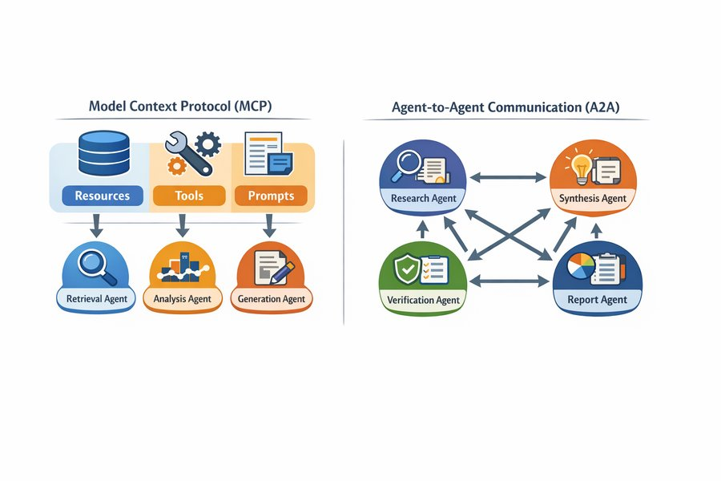
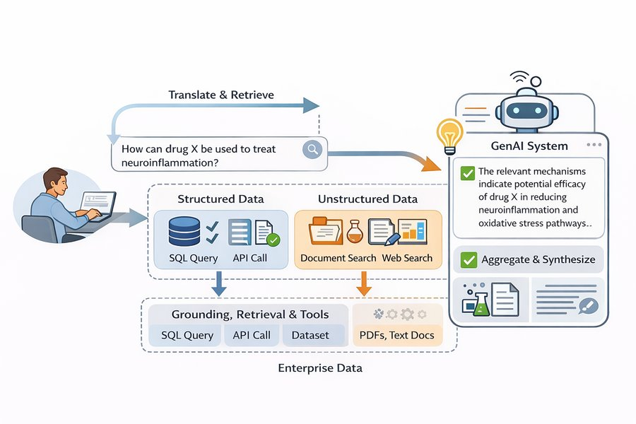
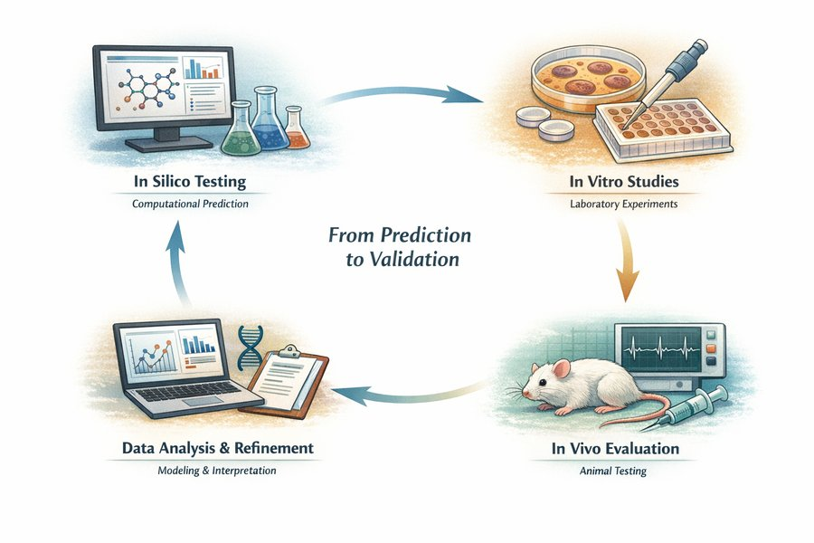

El hospital ha puesto en marcha un proyecto piloto. En todos los equipos informáticos de la unidad de cuidados intensivos hay ahora un asistente de guías: un cuadro en el que el personal puede escribir una pregunta en lenguaje corriente y recibir una respuesta en pocos segundos. Seán, el farmacéutico de la unidad, lo prueba esta noche con un problema real. La Sra. Aoife Byrne, de 71 años, ingresada por sepsis, recibe vancomicina y piperacilina–tazobactam, y su creatinina ha subido de 1,0 a 1,4 mg/dL en 36 horas. Él escribe: “¿Debemos cambiar la vancomicina, y con qué frecuencia debemos medir la creatinina?”
La respuesta llega al instante: seis puntos numerados, seguros, bien redactados, con la referencia de una revista al final. La Dra. Emma Walsh, la intensivista, la lee por encima de su hombro. Casi todo parece correcto. Una línea no: “suspenda inmediatamente la vancomicina y sustitúyala por gentamicina”. Y ninguno de los dos ha oído hablar nunca de esa revista.
A lo largo de todo este libro, Emma ha usado modelos de riesgo para decidir si Aoife necesita el paquete de protección renal. Un modelo le daba un número; ella sabía de dónde venía y cuál era su exactitud. Esto es diferente. ¿De qué está hecho este sistema? ¿Cuándo debe creerle Seán? ¿Quién es responsable si él sigue la respuesta, y tenía siquiera el hospital permiso para instalarlo? Este capítulo responde a esas preguntas.
Detrás del asistente de guías hay varios componentes distintos. Clasifica cada uno como parte del propio modelo de lenguaje, de la etapa de recuperación que busca información, una herramienta que el sistema puede invocar o supervisión humana. Aventura una respuesta; el capítulo explica cada término.
Componente
Tu etiqueta
Un transformer entrenado con una enorme colección de textos para predecir la siguiente palabra.
Una búsqueda en los documentos de guías del hospital que devuelve los tres párrafos más relevantes para cada pregunta.
Una calculadora que, cuando se le pide, calcula el aclaramiento de creatinina con la ecuación de Cockcroft–Gault.
Seán comprueba cada dosis sugerida antes de que se escriba en la prescripción.
Un entrenamiento adicional en el que personas compararon pares de respuestas, para que el modelo aprendiera a seguir instrucciones con cortesía y a rechazar peticiones inseguras.
Cómo usar este capítulo
¿Empiezas aquí?
Este capítulo reúne ideas de muchos capítulos anteriores. En resumen:
Decisiones y calidad de la decisión (Definición 1.4, Sección 1.5). Una decisión elige una alternativa de un conjunto \(\mathcal{A}\) sobre la base de un estado de conocimiento \(\mathcal{K}\). La calidad de la decisión es una cadena de seis eslabones (encuadre, alternativas, información, valores, razonamiento, compromiso), y una decisión es tan fuerte como su eslabón más débil. En el Capítulo 1, el equipo de la UCI Sala 7 decidió que vale la pena iniciar el paquete de protección renal cuando el riesgo de Aoife de sufrir una lesión renal aguda (LRA) supera 0,25.
Las máquinas comprueban la coherencia, no la verdad (Sección 1.6). Un sistema que produce texto plausible no lo ha contrastado con el mundo.
El texto como vectores (Capítulo 15). Un documento se convierte en un vector de pesos de palabras; con TF-IDF pesan más las palabras frecuentes en un documento pero raras en la colección, y dos documentos se comparan mediante el coseno del ángulo entre sus vectores.
Modelos de lenguaje (Capítulo 16). Un modelo de lenguaje asigna una probabilidad a cada posible siguiente token \(w_t\) dados los tokens anteriores, \(P(w_t \mid w_{<t})\); se entrena minimizando la entropía cruzada de los siguientes tokens reales y genera texto por muestreo, con una temperatura que controla lo atrevido que es el muestreo. Los embeddings son vectores aprendidos en los que las palabras de significado parecido quedan cerca.
El transformer (Capítulo 17). La atención permite que cada posición mire a todas las posiciones anteriores; una pila de bloques transformer con máscara causal, entrenada para predecir el siguiente token, es un modelo solo decodificador (decoder-only) de la familia GPT.
Aprendizaje por transferencia (Capítulo 7): una red entrenada con un conjunto de datos grande se somete a ajuste fino con otro más pequeño. Calibración (Capítulo 5): un modelo está calibrado si, entre los casos a los que asigna un 80 %, alrededor del 80 % son positivos. Abstención (Capítulo 8): un modelo que sabe cuán incierto está puede derivar los casos difíciles a una persona.
Aprendizaje por refuerzo (Capítulo 14): un agente sigue una política\(\pi\) y aprende de recompensas. Los ensayos aleatorizados (Capítulo 13) son la evidencia más sólida de que un tratamiento funciona.
Ejemplo
Quién o qué
Desenlace
Caras que vas a conocer
1UCI Sala 7
1250 pacientes de UCI en 4 hospitales
variación de la creatinina en 48 h (lesión renal aguda si ≥ 0,3 mg/dL)
Aoife (71 años, sepsis, riesgo limítrofe), Tomás (54 años, riesgo bajo), Priya (38 años, riesgo alto); la Dra. Emma Walsh; Seán, el farmacéutico
2Ensayo ONCO-1
1000 pacientes aleatorizados a quimioterapia o no
reducción del tumor (%)
pacientes #0042 y #0917
3HomeBeat
500 personas que llevan un reloj inteligente en casa
puntuación de estrés, evento de deterioro
Lena
4CellWorks
420 lotes de producción de una terapia celular
puntuación de potencia
lote CW-118
Los cuatro conjuntos de datos son simulados y pueden descargarse en el apéndice de datos. La presentación completa está en la Sección 1.1.
Este capítulo acompaña a un modelo de lenguaje fuera del laboratorio y dentro de la planta del hospital. Verás cómo un predictor de la siguiente palabra se convierte en un asistente, cómo los prompts, la recuperación y las herramientas moldean lo que hace, cómo evaluarlo y sorprenderlo inventando cosas, qué leyes se le aplican, cómo la IA ayudó a llevar un nuevo fármaco a un ensayo clínico y dónde encaja la IA en la cadena de la calidad de la decisión del Capítulo 1. Tiene once secciones y un Laboratorio, ocho comprobaciones rápidas, tres widgets “Pruébalo”, un desafío y tres misiones de programación en R y Python. Reserva unas dos horas. En este capítulo no se ejecuta ningún modelo de lenguaje: todas las respuestas que vas a leer se escribieron de antemano, y todos los números proceden de archivos pequeños que puedes descargar y comprobar.
Notación de un vistazo (solo para consulta)
Símbolo
Significado
Sección
\(w_t\), \(w_{<t}\)
el token en la posición \(t\); todos los tokens anteriores a él
Los Capítulos 15 a 17 construyeron un modelo de lenguaje desde la base: el texto se convirtió en tokens y vectores, un modelo aprendió a asignar una probabilidad a cada posible siguiente token, y el transformer hizo ese modelo grande y rápido. Ampliado y entrenado con una gran parte del mundo escrito, un modelo así puede continuar una frase, resumir un documento, responder a una pregunta o traducir un párrafo, todo ello calculando una y otra vez \(P(w_t \mid w_{<t})\) y eligiendo un siguiente token. Los modelos de este tipo se llaman hoy modelos fundacionales.
Definición 18.1 (Modelo fundacional) Un modelo fundacional (foundation model) es un modelo grande, entrenado con datos amplios, normalmente por autosupervisión a gran escala, que puede adaptarse a una gran variedad de tareas posteriores (Bommasani et al. 2021). Un gran modelo de lenguaje (LLM, de large language model) es un modelo fundacional para texto; la mayoría de los LLM actuales son transformers solo decodificadores (Capítulo 17; Vaswani et al. (2017)) con miles de millones de parámetros.
Un modelo fundacional aporta capacidad. Por sí solo no aporta lo que necesita una unidad clínica: respuestas basadas en las guías de este hospital, aritmética exacta para una dosis, un registro de quién preguntó qué, una manera de decir “no lo sé” y una persona que compruebe antes de que nada llegue a un paciente. Todo eso procede del sistema construido alrededor del modelo (Figura 18.1): una interfaz que capta lo que quiere el usuario, un flujo de trabajo que decide los pasos, acceso a conocimiento externo, herramientas, memoria de la conversación y monitorización.
Figura 18.1: Del modelo fundacional al sistema de aplicación. El modelo aporta generación de uso general (textos, resúmenes, respuestas, transformaciones); el sistema añade la intención del usuario, la orquestación del flujo de trabajo, el conocimiento externo, las herramientas, la memoria y la monitorización.
Esta distinción organiza todo el capítulo. Un modelo predice lo que probablemente viene a continuación; un sistema organiza esas predicciones en un comportamiento que sirve a un propósito. Muchos de los fallos que acaparan titulares (afirmaciones fluidas que son falsas, datos desactualizados, respuestas imposibles de verificar) no son defectos del transformer. Son lo que cabe esperar de un generador probabilístico de texto usado sin la estructura que lo rodea (Thirunavukarasu et al. 2023). El asistente de Seán, como veremos, tiene un modelo en su centro; que sea seguro depende sobre todo de todo lo demás.
18.2 Cómo se construye un modelo fundacional
El modelo que hay dentro del asistente de Seán pasó por tres etapas de entrenamiento (Figura 18.2). Cada etapa usa un tipo distinto de datos y cambia el comportamiento del modelo de una manera distinta.
Figura 18.2: Las tres etapas que convierten un transformer en un modelo asistente.
18.2.1 Etapa 1: preentrenamiento
Definición 18.2 (Preentrenamiento, corpus de preentrenamiento y leyes de escala) El preentrenamiento ajusta un modelo de lenguaje a un corpus de preentrenamiento muy grande (páginas web, libros, artículos científicos, código) minimizando la entropía cruzada del siguiente token, exactamente el objetivo del Capítulo 16: \[
\mathcal{L}_{\text{pre}}(\theta) = -\sum_{t} \log P_\theta(w_t \mid w_{<t}) .
\qquad(18.1)\] Las leyes de escala (scaling laws) son la constatación empírica de que esta pérdida disminuye de forma suave y predecible, como una ley de potencia, a medida que crecen el número de parámetros, la cantidad de datos y el presupuesto de cómputo (Kaplan et al. 2020; Hoffmann et al. 2022).
Nada en Ecuación 18.1 menciona la medicina, la verdad ni la utilidad. El modelo es recompensado por predecir el texto que suele venir a continuación. Para predecir bien la siguiente palabra de un manual de farmacología tiene que asimilar mucha farmacología, y por eso los modelos grandes “saben” tanto (Brown et al. 2020). Pero también aprende todo lo que es común en su corpus, incluidas prácticas obsoletas, errores y prejuicios, y no aprende absolutamente nada de lo que ocurrió después de que se recopilara el corpus. Un modelo base que solo ha pasado por el preentrenamiento no responde preguntas; continúa el texto. Pregúntale “¿Cuál es el vasopresor de primera línea en el shock séptico?” y bien podría responder con tres preguntas de examen más, porque eso es lo que suele venir después de una línea así en la web.
18.2.2 Etapa 2: ajuste por instrucciones
Definición 18.3 (Ajuste por instrucciones) El ajuste por instrucciones (instruction tuning, o ajuste fino supervisado) continúa el entrenamiento de un modelo preentrenado con una colección de prompts \(x\) emparejados con buenas respuestas \(y\) escritas por personas, minimizando la entropía cruzada de los tokens de la respuesta dado el prompt, \(-\sum_{t \in y} \log P_\theta(w_t \mid x, w_{<t})\)(Wei, Bosma, et al. 2022; Ouyang et al. 2022).
El objetivo es el mismo que antes; solo cambian los datos. Unos pocos miles de ejemplos del tipo “instrucción → respuesta útil” bastan para convertir un continuador de texto en un modelo que hace lo que se le pide, porque la capacidad ya estaba ahí y solo hay que aprender el formato del comportamiento. Es aprendizaje por transferencia (Capítulo 7) aplicado al comportamiento.
18.2.3 Etapa 3: ajuste por preferencias
A las personas les resulta más fácil decir cuál de dos respuestas es mejor que escribir la respuesta perfecta. El ajuste por preferencias aprovecha esto. Evaluadores humanos ven un prompt \(x\) y dos respuestas, \(y_A\) e \(y_B\), y dicen cuál prefieren. Un modelo de recompensa\(r(x, y)\), que es a su vez una red neuronal, se entrena para que las respuestas preferidas reciban puntuaciones más altas, usando el modelo de Bradley–Terry de comparaciones por pares (Bradley y Terry 1952): \[
P(y_A \text{ preferida a } y_B \mid x) = \sigma\big(r(x, y_A) - r(x, y_B)\big),
\qquad(18.2)\] donde \(\sigma\) es la función logística del Capítulo 5. El modelo de recompensa es, literalmente, una regresión logística sobre la diferencia de dos puntuaciones.
Llega entonces el paso que da nombre al método. El modelo de lenguaje pasa a verse como una política\(\pi_\theta\) (Capítulo 14): dado un estado (el prompt) elige acciones (tokens) y, al final de una respuesta, recibe una recompensa \(r(x, y)\). El aprendizaje por refuerzo ajusta \(\theta\) para obtener más recompensa, mientras una penalización mantiene la nueva política cerca del modelo ajustado por instrucciones, \(\pi_{\text{ref}}\): \[
\max_\theta \;\; \mathbb{E}_{y \sim \pi_\theta(\cdot \mid x)}\big[r(x, y)\big] \;-\; \lambda\, \mathrm{KL}\big(\pi_\theta \,\|\, \pi_{\text{ref}}\big).
\qquad(18.3)\] El término KL (una medida de lo distintas que son dos distribuciones de probabilidad (Kullback y Leibler 1951)) impide que el modelo derive hacia textos extraños que por casualidad engañan al modelo de recompensa; \(\lambda\) fija con qué intensidad.
Definición 18.4 (Ajuste por preferencias: RLHF y DPO) El aprendizaje por refuerzo a partir de retroalimentación humana (RLHF) entrena un modelo de recompensa con comparaciones humanas de respuestas (Ecuación 18.2) y después optimiza el modelo de lenguaje, visto como una política, para maximizar esa recompensa con una penalización por alejarse demasiado del modelo de partida (Ecuación 18.3), normalmente con el algoritmo PPO (Christiano et al. 2017; Schulman et al. 2017; Ouyang et al. 2022). La optimización directa de preferencias (DPO) llega a un resultado parecido sin un modelo de recompensa separado ni aprendizaje por refuerzo, ajustando la política directamente a las comparaciones con una pérdida logística (Rafailov et al. 2023).
El ajuste por preferencias es la razón por la que los asistentes son corteses, ordenados y dispuestos a decir “consulte a un profesional sanitario”. También es la razón por la que pueden ser aduladores y excesivamente seguros: los evaluadores tienden a preferir respuestas fluidas, completas y seguras de sí mismas, y el modelo aprende a dar a las personas lo que ellas recompensan (Sharma et al. 2024). El ajuste por preferencias moldea el estilo y la prudencia; no añade conocimiento que le faltara al modelo ni hace que el modelo verifique los hechos.
Las guías del hospital se actualizaron el mes pasado. ¿Qué etapa de entrenamiento enseñaría al modelo la guía nueva?
18.3 Prompts: dirigir sin reentrenar
La manera más sencilla de usar un modelo es darle un prompt y leer la respuesta. Un prompt no programa el modelo en el sentido clásico: no define ninguna secuencia de operaciones. Cambia el contexto\(w_{<t}\) sobre el que se calcula cada probabilidad del siguiente token y, con ello, remodela toda la distribución de la que se extrae la respuesta. El mismo modelo se comporta de forma muy diferente según cómo se plantee el contexto.
Definición 18.5 (Prompt, prompt de sistema, prompts few-shot y de cadena de pensamiento) Un prompt es el texto que se da a un modelo de lenguaje como contexto para su respuesta. Las aplicaciones suelen anteponer un prompt de sistema que el usuario no ve y que fija el papel, las reglas y el formato (“Eres el asistente de guías de la UCI Sala 7. Responde solo a partir de los fragmentos proporcionados…”). El prompt zero-shot contiene solo la instrucción; el prompt few-shot añade al prompt unos pocos ejemplos resueltos de la tarea (Brown et al. 2020); el prompt de cadena de pensamiento (chain-of-thought) pide, o muestra, pasos intermedios de razonamiento antes de la respuesta (Wei, Wang, et al. 2022).
Toma la petición “Explica el papel del TNF-alfa en la inflamación.” Sin ninguna otra instrucción, el modelo produce una explicación general. “Explica el papel del TNF-alfa en la inflamación en tres viñetas, para un estudiante de primer curso de medicina” produce algo más corto y sencillo; “Resume el papel del TNF-alfa en la inflamación usando solo vías mecanísticas” produce algo más denso. La tarea es la misma; el planteamiento desplaza el paisaje de probabilidades. Un prompt few-shot para el asistente de Seán podría mostrar dos ejemplos de una pregunta, el fragmento de la guía en el que se apoya y una respuesta que cita ese fragmento, para que el modelo imite el patrón.
Tres hechos sobre los prompts importan en la práctica. Primero, las salidas son sensibles a la redacción, al orden de la información y a la temperatura de muestreo del Capítulo 16: la misma pregunta hecha dos veces puede recibir dos respuestas distintas, así que toda evaluación debe usar prompts fijos y ejecuciones repetidas. Segundo, el texto de la cadena de pensamiento no es una ventana al modo en que se calculó la respuesta; es más texto generado, útil para comprobar, pero sin garantía de ser la verdadera razón de la respuesta (Turpin et al. 2023). Tercero, un único prompt tiene que cargar tanto con la tarea como con el procedimiento, y a medida que las tareas crecen se vuelve frágil.
El encadenamiento de prompts (prompt chaining) aborda el tercer punto dividiendo una tarea en pasos, cada uno una llamada separada cuya salida alimenta la siguiente. Al pasar de explicar el TNF-alfa a proponer una terapia, una cadena podría (1) producir una explicación estructurada de la vía, (2) identificar los puntos en los que la vía podría bloquearse, (3) reunir lo que se sabe sobre los inhibidores existentes y su evidencia clínica y (4) sintetizar una propuesta. Cada salida intermedia puede inspeccionarse, corregirse o rechazarse, de modo que un error puede localizarse en el paso en que surgió en lugar de quedar enterrado en una única respuesta opaca. El paso 3, sin embargo, pide hechos, justo lo que un modelo de lenguaje por sí solo no puede garantizar. La siguiente sección muestra cómo los aporta un sistema.
18.4 Generación aumentada por recuperación
El conocimiento de un modelo de lenguaje queda congelado en sus parámetros al final del entrenamiento, el modelo no puede decir de dónde procede un dato y no sabe nada de las reglas locales de la UCI Sala 7. El remedio más utilizado es buscar primero los datos y dárselos al modelo junto con la pregunta (Lewis et al. 2020).
Definición 18.6 (Generación aumentada por recuperación (RAG), fragmento, recuperador, fundamentación) En la generación aumentada por recuperación (RAG, de retrieval-augmented generation), un sistema responde a una pregunta en tres pasos: un recuperador (retriever) busca en una colección de documentos, divididos en pasajes cortos llamados fragmentos (chunks), y devuelve los \(k\) fragmentos más parecidos a la pregunta; los fragmentos se insertan en el prompt con instrucciones de responder a partir de ellos; el modelo de lenguaje genera la respuesta (Lewis et al. 2020). Una respuesta está fundamentada (grounded) cuando cada afirmación que contiene está respaldada por los fragmentos recuperados, idealmente con una cita del fragmento que la respalda.
Figura 18.3: Generación aumentada por recuperación en el asistente de guías de la UCI Sala 7.
El recuperador no es nuevo para ti. En el Capítulo 15, un documento se convirtió en un vector TF-IDF y dos documentos se compararon mediante el coseno del ángulo entre sus vectores (Spärck Jones 1972; Salton y Buckley 1988). La RAG usa exactamente eso, con la pregunta en el papel de un documento muy corto. Para cada uno de los \(J\) fragmentos y cada palabra \(w\), el peso es el recuento de la palabra en el fragmento multiplicado por su frecuencia inversa de documento, \(\mathrm{idf}(w) = \ln\!\big((1 + J)/(1 + \mathrm{df}(w))\big) + 1\), donde \(\mathrm{df}(w)\) es el número de fragmentos que contienen \(w\); las palabras raras pesan más. La puntuación del fragmento \(j\) para la consulta es \[
\text{puntuación}(\mathbf{q}, \mathbf{d}_j) = \frac{\mathbf{q} \cdot \mathbf{d}_j}{\lVert \mathbf{q} \rVert \, \lVert \mathbf{d}_j \rVert} ,
\qquad(18.4)\] y, si todos los vectores se han escalado a longitud 1, la puntuación es simplemente el producto escalar. Los sistemas en producción suelen sustituir los vectores TF-IDF por embeddings densos generados por una red neuronal (Capítulo 16), para que “renal” pueda coincidir con “riñón” (Karpukhin et al. 2020), o combinan ambos; la lógica del flujo es la misma.
El asistente de la UCI Sala 7 busca en una pequeña colección de 31 fragmentos de 11 documentos locales: el paquete de LRA, las guías de vancomicina y de gentamicina, la guía de sepsis, algunos procedimientos de los otros ejemplos recurrentes, etcétera. La colección se escribió para este libro, para ilustrar la recuperación, y está en inglés; no es una orientación clínica. Puedes leer cada fragmento en el archivo de datos.
Inspecciona el recuperador. Elige una pregunta, o escribe la tuya, y mira qué fragmentos devuelve el recuperador TF-IDF, con sus puntuaciones de coseno; las palabras que coinciden con la consulta aparecen resaltadas. Como las guías están en inglés, las preguntas también deben escribirse en inglés. Debajo, abre el prompt que el sistema enviaría al modelo de lenguaje. Objetivo: prueba al menos tres preguntas, entre ellas “What is the maximum dose of rentosertib?” (“¿Cuál es la dosis máxima de rentosertib?”; el rentosertib es un fármaco que encontraremos en la Sección 18.9 y que no aparece en ninguna parte de las guías). Observa lo que devuelve el recuperador.
ragCorpus =FileAttachment("data/ch18_guidelines.csv").csv()ragIndex = {const stop =newSet(["a","an","and","are","as","at","be","by","can","do","does","for","from","has","have","how","i","if","in","is","it","its","not","of","on","or","our","should","so","that","the","their","them","then","there","these","they","this","to","was","we","what","when","which","while","who","will","with","without","you","been","into","than","after","before","more","most","also","all","any","every","each","may","only","other","such","whenever","where","one","two"]);const tok = s => s.toLowerCase().split(/[^a-z0-9]+/).filter(w => w.length>=2&&!stop.has(w));const docs = ragCorpus.map(d =>tok(d.section+" "+ d.text));const J = docs.length, df =newMap(); docs.forEach(ws =>newSet(ws).forEach(w => df.set(w, (df.get(w) ||0) +1)));const idf =newMap([...df].map(([w, n]) => [w,Math.log((1+ J) / (1+ n)) +1]));const vec = ws => {const v =newMap(); ws.forEach(w => { if (idf.has(w)) v.set(w, (v.get(w) ||0) +1); });let ss =0;for (const [w, c] of v) { const x = c * idf.get(w); v.set(w, x); ss += x * x; }const n =Math.sqrt(ss);if (n >0) for (const [w, x] of v) v.set(w, x / n);return v; };return {tok,vecs: docs.map(vec),query: q =>vec(tok(q))};}viewof ragPreset = Inputs.select(newMap([ ["La pregunta de Seán (escena inicial)","Mrs Byrne is on vancomycin and piperacillin-tazobactam, and her creatinine rose from 1.0 to 1.4 mg/dL in 36 hours. Should we change the vancomycin, and how often should we check creatinine?"], ["How often should creatinine be checked while the bundle is active?","How often should creatinine be checked while the bundle is active?"], ["Should vancomycin be stopped when creatinine is rising?","Should vancomycin be stopped when creatinine is rising?"], ["Can gentamicin be used in acute kidney injury?","Can gentamicin be used in acute kidney injury?"], ["Which renal-protective medicines must be withheld?","Which renal-protective medicines must be withheld?"], ["Can a batch that failed the potency test be released?","Can a batch that failed the potency test be released?"], ["What is the maximum dose of rentosertib?","What is the maximum dose of rentosertib?"]]), {label:"Elige una pregunta"})viewof ragQuery = Inputs.text({value: ragPreset,label:"…o edítala (en inglés)",width:560})viewof ragK = Inputs.range([1,5], {value:3,step:1,label:"Fragmentos recuperados, k"})ragHits = {const qv = ragIndex.query(ragQuery);const scored = ragCorpus.map((d, j) => {let s =0;for (const [w, x] of qv) s += x * (ragIndex.vecs[j].get(w) ||0);return {...d,score: s}; });return {qterms:newSet(qv.keys()),hits: scored.sort((a, b) => b.score- a.score).slice(0, ragK)};}{const esc = s => s.replace(/&/g,"&").replace(/</g,"<");const mark = t =>esc(t).replace(/[A-Za-z0-9]+/g, m => ragHits.qterms.has(m.toLowerCase()) ?`<mark>${m}</mark>`: m);const div =document.createElement("div"); div.innerHTML= ragHits.qterms.size===0?"<p><em>Ninguna de las palabras de esta pregunta aparece en las guías: todas las puntuaciones son 0.</em></p>": ragHits.hits.map((h, i) =>`<div style="border:1px solid var(--aihs-border);border-radius:8px;padding:0.45rem 0.7rem;margin:0.4rem 0"> <strong>${i +1}. [${h.chunk_id}]</strong> ${esc(h.document)}, <em>${esc(h.section)}</em> <span style="float:right">puntuación <strong>${h.score.toFixed(3)}</strong> <span style="display:inline-block;width:80px;height:8px;border-radius:4px;background:var(--aihs-border);vertical-align:middle;overflow:hidden"> <span style="display:block;height:100%;width:${Math.min(100,100* h.score)}%;background:var(--aihs-accent)"></span></span></span> <div style="font-size:0.92em;margin-top:0.25rem">${mark(h.text)}</div></div>`).join("");return div;}
{const p = ["Eres el asistente de guías de la UCI Sala 7. Responde SOLO a partir de los fragmentos numerados de abajo.","Cita el identificador del fragmento en cada afirmación. Si los fragmentos no contienen la respuesta,","di que las guías no tratan el tema y sugiere consultar al farmacéutico de la unidad.",""].concat(ragHits.hits.map(h =>`[${h.chunk_id}] ${h.text}`)).concat(["","Pregunta: "+ ragQuery]).join("\n");const det =document.createElement("details"); det.innerHTML="<summary>Mostrar el prompt que el sistema enviaría al modelo de lenguaje</summary>";const pre =document.createElement("pre"); pre.style.whiteSpace="pre-wrap"; pre.style.fontSize="0.85em"; pre.textContent= p; det.appendChild(pre);return det;}
ragSeen =newSet(){ ragSeen.add(ragQuery.trim().toLowerCase());const done = ragSeen.size>=3&& [...ragSeen].some(q => q.includes("rentosertib"));if (done &&window.aihs) window.aihs.complete("ch18-tryit-rag");returnhtml`<p style="font-size:0.92em">Preguntas probadas: <strong>${ragSeen.size}</strong>${done ?". ✓ Punto de control alcanzado: ahora lee el texto que hay debajo del widget.":""}</p>`;}
Del inspector salen tres lecciones, y cada una es un modo de fallo de los sistemas RAG reales.
El recuperador siempre devuelve algo. Para la pregunta sobre el rentosertib, el fragmento superior es VAN-1, con una puntuación de 0,497, mayor que la puntuación del fragmento correcto para la pregunta sobre la monitorización (AKI-4, 0,343). Coincide solo porque ambos contienen la palabra dose (dosis). Un umbral de puntuación, por sí solo, no distingue lo relevante de lo irrelevante; ese trabajo tienen que hacerlo la instrucción “si los fragmentos no contienen la respuesta, dilo” y una comprobación de la respuesta frente a los fragmentos.
Las palabras no son significados.“Which renal-protective medicines must be withheld?” (“¿Qué medicamentos de protección renal deben suspenderse?”) no encuentra nada útil (mejor puntuación 0,130): la guía dice kidney, nephrotoxic, hold y pause, nunca renal-protective ni withheld. Los embeddings densos reducen este problema; no lo eliminan.
Lo que no se recupera no puede usarse. Elige la propia pregunta de Seán, de la escena inicial: el recuperador devuelve VAN-5, VAN-4, LAB-2, pero no la regla de monitorización del paquete (AKI-4), porque la pregunta usa check (“comprobar”) y la guía dice measured (“medida”). Una respuesta construida sobre esos fragmentos callará, o se equivocará, sobre la frecuencia con que hay que medir la creatinina.
Otros modos de fallo no se ven en una colección pequeña: fragmentos de versiones distintas de una guía que se contradicen, un pasaje cortado en mitad de una tabla, modelos que prestan menos atención a los pasajes situados en medio de un prompt largo (Liu et al. 2024) y documentos que contienen instrucciones ocultas dirigidas al modelo, que este puede obedecer, la llamada inyección de prompt (prompt injection) (Greshake et al. 2023). La RAG traslada el problema de saber al problema de encontrar, y encontrar se puede poner a prueba, que es su gran ventaja.
Para la pregunta sobre el rentosertib, el recuperador devuelve un fragmento sobre la vancomicina con una puntuación bastante alta. ¿Qué debería hacer un asistente bien diseñado?
Sé el recuperador. Los fragmentos de las guías ya están indexados: X contiene un vector TF-IDF por fragmento, cada uno escalado a longitud 1, y embed() convierte una pregunta en un vector del mismo espacio. Como todos los vectores tienen longitud 1, multiplicar X por el vector de la consulta da la puntuación de coseno de cada fragmento (Ecuación 18.4). Rellena el hueco con la función que devuelve la posición de la mayor puntuación, para que la última línea imprima el identificador del mejor fragmento.
El nombre de la función lo dice todo: cuál (which) elemento es el máximo.
best <-which.max(scores)
La función de numpy es el argumento del máximo.
best =int(np.argmax(scores))
18.5 Herramientas, agentes y protocolos
Algunos pasos no debería darlos un modelo de lenguaje. La pregunta de Seán necesita el aclaramiento de creatinina de Aoife, que es aritmética (Cockcroft y Gault 1976); un modelo que predice dígitos token a token puede equivocarse en una cuenta, una calculadora no. Otros pasos necesitan datos que el modelo no tiene: los resultados de laboratorio de hoy, el formulario terapéutico vigente, una base de datos de interacciones farmacológicas.
Definición 18.7 (Uso de herramientas y agente) En el uso de herramientas (tool use), el modelo de lenguaje no calcula la respuesta por sí mismo, sino que escribe una solicitud estructurada, como “llama a creatinine_clearance con edad 71, peso 68 kg, creatinina 1,4 mg/dL, sexo femenino”, que el sistema ejecuta con software corriente y determinista; el resultado se devuelve al contexto y el modelo continúa (Schick et al. 2023). Un agente es un sistema en el que el modelo decide además, mientras la tarea avanza, qué paso dar a continuación (recuperar, invocar una herramienta, dividir la tarea o detenerse), normalmente alternando pasos breves de razonamiento con acciones (Yao et al. 2023).
Volviendo a la cadena del TNF-alfa de la Sección 18.3: comprobar si el TNF-alfa es una diana validada, enumerar los inhibidores conocidos con su situación clínica o estimar una propiedad farmacocinética son tareas para bases de datos curadas y calculadoras. El papel del modelo cambia: en lugar de producir la respuesta, pasa a coordinar un proceso que combina la generación con el cálculo determinista y el conocimiento externo.
La diferencia entre una cadena fija y un agente es el grado de libertad del sistema (Figura 18.4). Una cadena ejecuta siempre los mismos pasos, en el mismo orden: previsible, fácil de probar, a veces derrochadora. Un agente se adapta: puede decidir que ya sabe lo suficiente, o que necesita recuperar, calcular o dividir la tarea en subtareas; puede esbozar un plan, ejecutarlo y comprobar su propio trabajo.
Figura 18.4: Flujos de trabajo encadenados frente a agénticos. Una cadena ejecuta pasos fijos en un orden fijo; un agente decide durante la ejecución si recuperar, invocar una herramienta o dividir la tarea.
La libertad tiene un precio. Los planes pueden ser malos; los agentes dan pasos innecesarios, repiten trabajo o se pierden; la autocomprobación no es fiable cuando el mismo modelo genera y juzga; y los pequeños errores se acumulan a lo largo de muchos pasos. Cada herramienta que un agente puede invocar es también una acción que puede ejecutar mal, o que un texto que lee puede inducirle a ejecutar (de nuevo, la inyección de prompt). En un hospital, la regla práctica es sencilla: cuanto más puede hacer un agente (escribir en la historia clínica, emitir una prescripción, contactar con un paciente), más estrechos deben ser sus permisos, más completos sus registros y más seguro debe ser que una persona apruebe cada acción con consecuencias.
Muchos agentes, y los protocolos que los conectan. Las tareas complejas a veces se reparten entre varios agentes especializados (uno recupera, otro analiza, otro redacta, otro comprueba), como un pequeño equipo. Dos protocolos abiertos, ambos presentados recientemente, estandarizan las conexiones (Figura 18.5). El Model Context Protocol (MCP) define cómo un agente descubre y usa capacidades externas, que agrupa en recursos (datos), herramientas (acciones y cálculos) y prompts (plantillas reutilizables), de modo que un único conector del hospital para, por ejemplo, el formulario terapéutico pueda servir a cualquier asistente compatible con MCP (Model Context Protocol 2026). Los protocolos de agente a agente (A2A) definen cómo agentes de proveedores distintos se describen mutuamente sus habilidades, delegan tareas e intercambian resultados (A2A Project 2026). Ninguno de los dos decide qué debe hacer un sistema: el MCP estandariza el acceso, el A2A estandariza la conversación, y la orquestación sigue siendo una decisión de diseño, y una responsabilidad.

Figura 18.5: Dos patrones complementarios. A la izquierda: mediante el Model Context Protocol (MCP), los agentes acceden a recursos, herramientas y prompts compartidos. A la derecha: con la comunicación de agente a agente (A2A), agentes especializados intercambian información y tareas directamente.
Los diseños con varios agentes compensan cuando una tarea se divide de verdad en papeles distintos; para la mayoría de las preguntas clínicas, una única cadena bien probada, con recuperación y una o dos herramientas, es más fácil de evaluar, de monitorizar y de merecer confianza.
Dónde se usan estos sistemas. El mismo patrón, un modelo dentro de un flujo de trabajo con recuperación y herramientas, aparece allí donde se despliega la IA generativa: preguntas en lenguaje natural traducidas a consultas de bases de datos y búsquedas bibliográficas (Figura 18.6), asistentes de programación que leen un repositorio y ejecutan sus pruebas, asistentes que responden a las preguntas del personal a partir de documentos internos, redacción de material de marketing o de información para pacientes bajo revisión. En la salud y las ciencias de la vida, la lista incluye el apoyo a la lectura de la literatura, el resumen de notas clínicas, la información farmacológica, la extracción de datos estructurados de informes y el análisis de notificaciones de acontecimientos adversos (Thirunavukarasu et al. 2023). En todos los casos, el valor procede menos del modelo que del sistema en el que está integrado.

Figura 18.6: De la pregunta a la respuesta fundamentada: el sistema traduce una pregunta en lenguaje natural en consultas a datos estructurados y en búsquedas en documentos, y después agrega y sintetiza los resultados.
En el asistente de Seán, ¿qué tarea debería encomendarse a una herramienta en lugar de dejarla en manos del modelo de lenguaje?
18.6 ¿Ajuste fino, destilación o recuperación?
A veces un modelo general no basta, ni siquiera con buenos prompts y recuperación: las salidas deben seguir un formato de informe rígido, usar las convenciones de una especialidad o ejecutarse en un servidor del hospital en lugar de en la nube de un proveedor. En ese caso se puede adaptar el propio modelo.
Definición 18.8 (Ajuste fino, LoRA y destilación) El ajuste fino (fine-tuning) continúa el entrenamiento de un modelo preentrenado con datos de la tarea o del dominio de destino, para que el comportamiento deseado quede incorporado en sus pesos (Capítulo 7). Actualizar todos los pesos es caro; los métodos eficientes en parámetros actualizan un número pequeño de ellos. LoRA (adaptación de bajo rango, low-rank adaptation) congela cada gran matriz de pesos \(\mathbf{W}_0\) y aprende una corrección de bajo rango, \(\mathbf{W} = \mathbf{W}_0 + \mathbf{B}\mathbf{A}\), donde \(\mathbf{B}\) es \(d \times m\), \(\mathbf{A}\) es \(m \times d\) y el rango \(m\) es mucho menor que \(d\)(Hu et al. 2022). La destilación entrena un modelo alumno más pequeño para imitar las salidas de un profesor más grande, conservando buena parte de su comportamiento por una fracción del coste (Hinton, Vinyals, y Dean 2015).
La aritmética de LoRA muestra por qué es tan popular. Para una sola matriz de pesos con \(d =\) 4096, el ajuste fino completo actualiza \(d^2 =\) 16 777 216 números; LoRA con rango \(m =\) 8 actualiza \(2dm =\) 65 536, alrededor del 0,4 % de ese total. Los adaptadores para varias tareas pueden guardarse uno al lado de otro e intercambiarse sobre el mismo modelo base.
El ajuste fino y la destilación actúan sobre el modelo; los prompts, la recuperación y las herramientas actúan sobre la forma en que el modelo se usa en el momento de la pregunta (Figura 18.7). El ajuste fino hace que un modelo se comporte de otra manera; la destilación hace que un modelo se comporte de forma parecida con restricciones más estrictas: más pequeño, más rápido, capaz de ejecutarse en el propio hospital, lo que también ayuda a mantener los datos de los pacientes dentro de la institución.
Figura 18.7: Palancas distintas. Los prompts, la recuperación (RAG) y la integración de herramientas cambian el contexto y las herramientas disponibles en el momento de la inferencia; el ajuste fino adapta un modelo base con datos del dominio, y la destilación transfiere el comportamiento de un profesor a un alumno más pequeño.
Tabla 18.1: Qué palanca para qué necesidad. En la práctica, los sistemas combinan varias.
Necesidad
Primera palanca
Por qué
Datos que cambian (guías, formulario terapéutico, resultados de hoy)
Recuperación
Actualizar un documento es instantáneo y auditable; las respuestas pueden citar la fuente
Un formato de salida fijo o un estilo de la casa
Prompts, después ajuste fino
Unos pocos ejemplos en el prompt suelen bastar; haz ajuste fino si no bastan
Vocabulario y convenciones de especialistas
Ajuste fino
Los patrones repartidos en miles de ejemplos difícilmente caben en un prompt
Cálculo exacto, datos en tiempo real
Herramientas
El software determinista es exacto y comprobable
Coste, velocidad, ejecución en el propio hospital
Destilación (o un modelo más pequeño con ajuste fino)
Un modelo más pequeño es más barato y puede quedarse dentro del hospital
Un error frecuente es hacer ajuste fino de un modelo con las guías para “enseñarle los datos”. El ajuste fino es una mala manera de almacenar datos: el modelo puede mezclar versiones antiguas y nuevas, no puede decir de dónde salió una respuesta y hay que reentrenarlo en cada actualización. Los datos van a los documentos; el comportamiento va a los pesos.
La farmacia quiere todas las respuestas con la misma estructura (recomendación, fuente en la guía, monitorización, cuándo escalar) y tiene 3000 ejemplos de buenas respuestas escritas por farmacéuticos. Un prompt con dos ejemplos da la estructura correcta solo unas dos de cada tres veces. ¿Cuál es el siguiente paso más sensato?
18.7 Evaluar un asistente
Todos los modelos de este libro se han juzgado con datos que no habían visto, con una métrica elegida en función de la decisión (Sección 1.9). La misma disciplina se aplica a un sistema basado en un modelo de lenguaje, con tres complicaciones: rara vez hay una única respuesta correcta, la salida es texto libre y la misma pregunta puede recibir respuestas distintas en ejecuciones distintas.
Definición 18.9 (Benchmark y evaluación en el mundo real; rúbrica) Un benchmark es un conjunto de prueba público y fijo, como las preguntas de opción múltiple de los exámenes de licencia médica (Jin et al. 2021). La evaluación en el mundo real pone a prueba el sistema completo con las tareas, los documentos y los usuarios del entorno en el que se va a desplegar e, idealmente, mide su efecto sobre las decisiones y los desenlaces. Una rúbrica es un esquema de puntuación escrito que los evaluadores aplican a cada respuesta: por ejemplo, corrección, fundamentación (¿las citas son reales y respaldan las afirmaciones?), exhaustividad, potencial de daño y si el sistema se abstuvo cuando debía.
Los benchmarks son útiles para comparar modelos, y de ellos salen los titulares: un modelo de lenguaje ajustado para la medicina superó la nota de aprobado en preguntas al estilo de los exámenes de licencia en 2023 (Singhal et al. 2023). Pero una pregunta de examen llega limpia, completa y con cuatro opciones. Cuando los modelos recibieron, en cambio, la información de casos hospitalarios reales paso a paso y tuvieron que llegar a un diagnóstico y a un plan, rindieron peor que los médicos, a menudo no siguieron las guías y cambiaron sus respuestas cuando la misma información se presentaba en otro orden (Hager et al. 2024). Es de nuevo la lección del aprendizaje por atajos y de la validación externa del Capítulo 7: el rendimiento en un conjunto de prueba dice poco sobre el rendimiento en una población de casos distinta.
Una evaluación local creíble del asistente de Seán tiene, por tanto, este aspecto: unos pocos cientos de preguntas reales recogidas del personal (incluidas, a propósito, preguntas fuera de su alcance), prompts y configuraciones fijos, cada respuesta puntuada por dos farmacéuticos con una rúbrica, desacuerdos resueltos y resultados comunicados por categoría, con intervalos de confianza. Usar otro modelo de lenguaje como evaluador (LLM como juez, LLM-as-a-judge) es más barato, pero estos jueces prefieren las respuestas más largas, las respuestas en primera posición y las respuestas con su mismo estilo, así que también ellos deben validarse frente a evaluadores humanos (Zheng et al. 2023). Y como el sistema puede cambiar (una nueva versión del modelo, un nuevo prompt, una guía actualizada), la evaluación no se hace una sola vez: se repite después de cada cambio.
El archivo ch18_eval.csv contiene una evaluación simulada de este tipo: las mismas 150 preguntas del personal respondidas por el modelo de lenguaje solo (model_only) y por el modelo con recuperación (rag), cada respuesta puntuada en cuanto a corrección y en cuanto a afirmaciones sin respaldo. Los números se inventaron para mostrar patrones típicos; no son resultados de un producto real.
¿Reduce la recuperación el contenido inventado? En ev, la columna hallucinated vale 1 cuando una respuesta contiene al menos una afirmación no respaldada por las guías, y config indica qué sistema la dio. Rellena el hueco para que la línea calcule la proporción de respuestas con alucinaciones por separado para cada configuración.
En esta evaluación simulada, el 42 % de las respuestas del modelo solo contenía una afirmación sin respaldo (intervalo de confianza del 95 % de 34 % a 50 %), frente al 12 % con recuperación (8 % a 18 %); la proporción de respuestas correctas subió del 57 % al 83 %. Los intervalos son intervalos de Wilson para una proporción (Wilson 1927), construidos sobre la distribución binomial del Capítulo 2; con 150 preguntas tienen una anchura de 10 a 16 puntos porcentuales, y por eso una evaluación seria necesita cientos de preguntas y no un puñado de ejemplos llamativos. Las preguntas fuera de alcance son las más reveladoras: la respuesta correcta a ellas es abstenerse, y el modelo solo lo hizo apenas en el 21 % de los casos, frente al 58 % con recuperación y una instrucción explícita de decir cuándo las guías no tratan una pregunta.
18.7.1 Alucinación
Definición 18.10 (Alucinación) Una alucinación es un contenido generado, fluido y plausible, pero no respaldado por la fuente proporcionada al sistema ni por los hechos del mundo (Ji et al. 2023). Es intrínseca cuando contradice la fuente y extrínseca cuando no puede verificarse a partir de la fuente, lo que incluye referencias, números y citas inventados.
Las alucinaciones no son un defecto que vaya a eliminar un parche. Se derivan de lo que es un modelo de lenguaje (Sección 1.6): un sistema que produce la continuación más plausible, sea verdadera o no. La recuperación, las instrucciones de citar y de abstenerse y la comprobación de cada afirmación frente a su fuente las reducen; solo una persona que comprueba puede atrapar el resto. Comprobar es una habilidad, y puedes practicarla.
Las dos salidas siguientes se inventaron para este ejercicio para mostrar errores típicos; ningún sistema real las produjo. Ambas responden a la pregunta de Seán sobre Aoife de la escena inicial. La salida A procede de un modelo de lenguaje solo; la salida B, del mismo modelo con recuperación, que devolvió los fragmentos VAN-5, VAN-4, LAB-2. Juzga cada afirmación a la luz de los fragmentos de las guías de la UCI Sala 7 del recuadro.
Salida ilustrativa A: modelo de lenguaje solo (inventada)
La Sra. Byrne cumple el criterio KDIGO de lesión renal aguda: su creatinina subió 0,4 mg/dL en 48 horas.
La vancomicina debe suspenderse inmediatamente y sustituirse por gentamicina, que es más segura para los riñones.
La guía de la UCI Sala 7 recomienda medir la creatinina cada 6 horas mientras el paquete esté activo.
Apunta a niveles valle de vancomicina de 15–20 mg/L.
Esta pauta está respaldada por Smith et al., Journal of Renal Pharmacotherapy (2019).
La combinación de vancomicina con piperacilina–tazobactam se asocia a una mayor tasa de lesión renal.
Salida ilustrativa B: modelo de lenguaje con recuperación (inventada)
No suspendas la vancomicina sin consultarlo con el equipo de microbiología; el farmacéutico debe revisar la dosis y el intervalo en un plazo de 24 horas, y debe extraerse un nuevo nivel [VAN-4].
Considera un betalactámico alternativo a la piperacilina–tazobactam y monitoriza la creatinina a diario [VAN-5].
El riesgo de que la Sra. Byrne necesite diálisis es de alrededor del 10 % [VAN-5].
Fragmentos de las guías de la UCI Sala 7 (del corpus ilustrativo del libro)
[AKI-2] Acute kidney injury is defined by the KDIGO criteria: a rise in serum creatinine of at least 0,3 mg/dL within 48 hours, or a rise to at least 1,5 times baseline within 7 days, or urine output below 0,5 mL/kg/h for 6 hours.
[AKI-4] While the bundle is active, serum creatinine is measured every 12 hours and urine output is recorded every hour. The nurse in charge escalates to the intensivist if urine output falls below 0,5 mL/kg/h for two consecutive hours.
[VAN-3] Vancomycin dosing is guided by the area under the concentration-time curve (AUC), with a target AUC of 400 to 600 mg h/L. Monitoring by trough level alone is no longer recommended for serious infections.
[VAN-4] If creatinine rises during vancomycin treatment, do not stop vancomycin without discussing it with the microbiology team. The pharmacist reviews the dose and interval within 24 hours and a new vancomycin level is taken.
[VAN-5] The combination of vancomycin with piperacillin-tazobactam has been associated with a higher rate of acute kidney injury than vancomycin with other beta-lactams. Consider an alternative beta-lactam and monitor creatinine daily.
[GEN-2] Avoid gentamicin in patients with acute kidney injury or rising creatinine unless there is no suitable alternative, and only after discussion with the microbiology team.
¿Cada afirmación está respaldada por los fragmentos, contradicha por ellos o no respaldada (no verificable a partir de ellos)?
A1: La Sra. Byrne cumple el criterio KDIGO de lesión renal aguda. Respaldada
A2: Suspender inmediatamente la vancomicina y sustituirla por gentamicina. Contradicha
A3: La guía recomienda medir la creatinina cada 6 horas mientras el paquete esté activo. Contradicha
A4: Apuntar a niveles valle de vancomicina de 15–20 mg/L. Contradicha
A5: Respaldada por Smith et al., Journal of Renal Pharmacotherapy (2019). No respaldada
A6: La vancomicina con piperacilina–tazobactam se asocia a más lesión renal. Respaldada
B1: No suspender la vancomicina sin consultarlo; revisión por el farmacéutico en un plazo de 24 horas [VAN-4]. Respaldada
B3: El riesgo de que la Sra. Byrne necesite diálisis es de alrededor del 10 % [VAN-5]. No respaldada
Repasa lo que has encontrado. La salida A mezcla dos afirmaciones correctas (Kidney Disease: Improving Global Outcomes (KDIGO) Acute Kidney Injury Work Group 2012; Luther et al. 2018) con tres contradicciones y una referencia inventada, todo con la misma voz segura; nada en el texto indica cuál es cuál. La afirmación A2 es la peligrosa: invierte VAN-4 y recomienda un fármaco que GEN-2 manda evitar. La salida B es mucho mejor, pero la afirmación B3 es una alucinación de cita: un número con el identificador de un fragmento real adjunto, aunque VAN-5 no dice nada sobre la diálisis. Las citas hacen posible la comprobación; no la hacen innecesaria. Y fíjate en lo que la salida B no dice: calla sobre la regla del paquete de medir la creatinina cada 12 horas, porque el recuperador nunca encontró AKI-4 (Sección 18.4). Por último, “respaldada” significa respaldada por la guía: si la propia guía está desactualizada, una respuesta perfectamente fundamentada sigue siendo errónea. La fundamentación traslada la confianza del modelo a los documentos y a las personas que los mantienen.
18.7.2 Confianza declarada, calibración y abstención
Se puede pedir a los asistentes que declaren cuánta confianza tienen. ¿Vale algo un “90 % de seguridad”? Sí, si el sistema está calibrado (Capítulo 5): entre las respuestas que da con un 90 % de confianza, alrededor del 90 % deberían ser correctas. Las redes neuronales modernas suelen ser excesivamente confiadas (Guo et al. 2017); los modelos de lenguaje pueden estar razonablemente calibrados en algunos formatos de pregunta (Kadavath et al. 2022), pero eso hay que medirlo, no suponerlo. Una confianza calibrada es útil porque permite la respuesta selectiva, la estrategia del Capítulo 8: responder cuando hay confianza, abstenerse y derivar a una persona cuando no la hay.
Responde solo cuando haya confianza. Cada una de las 150 preguntas de la evaluación simulada tiene una confianza declarada y un veredicto (correcta o no). Elige una configuración y un umbral de confianza: el asistente responde solo cuando la confianza declarada alcanza el umbral y deriva las demás preguntas al farmacéutico. El gráfico superior compara la confianza declarada con la proporción observada de aciertos (un sistema calibrado queda sobre la diagonal); el inferior muestra el compromiso entre la cobertura (la fracción de preguntas respondidas) y la exactitud entre las respondidas. Objetivo: encontrar un ajuste en el que al menos el 92 % de las preguntas respondidas sean correctas y el asistente siga respondiendo al menos al 60 % de ellas.
evalData =FileAttachment("data/ch18_eval.csv").csv({typed:true})viewof calCfg = Inputs.radio(newMap([["Modelo solo","model_only"], ["Modelo con recuperación (RAG)","rag"]]), {value:"model_only",label:"Configuración"})viewof calT = Inputs.range([0.5,0.99], {value:0.5,step:0.01,label:"Responder solo si la confianza declarada es ≥"})calStats = {const d = evalData.filter(e => e.config=== calCfg);const s = d.filter(e => e.stated_conf>= calT);return {n: d.length,nAns: s.length,cov: s.length/ d.length,acc: s.length? d3.mean(s, e => e.correct) :NaN,hall: s.length? d3.mean(s, e => e.hallucinated) :NaN};}{const hit = calStats.acc>=0.92&& calStats.cov>=0.6;if (hit &&window.aihs) window.aihs.complete("ch18-tryit-calibration");returnhtml`<p>Respondidas: <strong>${calStats.nAns}</strong> de ${calStats.n} preguntas (cobertura ${(100* calStats.cov).toFixed(0)} %) · correctas entre las respondidas: <strong>${isNaN(calStats.acc) ?"n/d": (100* calStats.acc).toFixed(1) +" %"}</strong> · con afirmación sin respaldo: ${isNaN(calStats.hall) ?"n/d": (100* calStats.hall).toFixed(1) +" %"}${hit ?". ✓ Objetivo alcanzado.":""}</p>`;}
calBins = {const d = evalData.filter(e => e.config=== calCfg);const edges = [0.3,0.6,0.7,0.8,0.9,1.0001];return d3.range(edges.length-1).map(i => {const b = d.filter(e => e.stated_conf>= edges[i] && e.stated_conf< edges[i +1]);return b.length? {conf: d3.mean(b, e => e.stated_conf),acc: d3.mean(b, e => e.correct),n: b.length} :null; }).filter(x => x);}Plot.plot({height:260,grid:true,x: {domain: [0.3,1],label:"Confianza declarada"},y: {domain: [0,1],label:"Proporción de aciertos"},marks: [ Plot.line([[0.3,0.3], [1,1]], {strokeDasharray:"4,4"}), Plot.line(calBins, {x:"conf",y:"acc",stroke:"#1f6f8b",strokeWidth:2}), Plot.dot(calBins, {x:"conf",y:"acc",r: d =>2+Math.sqrt(d.n),fill:"#1f6f8b",title: d =>`${d.n} respuestas`}), Plot.ruleX([calT], {strokeDasharray:"3,3",stroke:"#b35c00"}) ]})
El modelo solo declara una confianza media del 88 % mientras acierta el 57 % de las veces: es excesivamente confiado, y su confianza apenas separa las respuestas correctas de las erróneas, así que subir el umbral casi solo descarta respuestas. Con recuperación, la confianza declarada lleva información real, y un umbral compra exactitud a costa de cobertura. El modelo solo nunca llega al 100 % (como mucho el 88 %, con apenas 16 respuestas). Con recuperación, todas las respuestas dadas con una confianza declarada de al menos 0,94 son correctas, pero cubren solo el 21 % de las preguntas, y 32 respuestas correctas de 32 no demuestran que nunca se den respuestas erróneas con plena confianza, y por eso la abstención complementa la revisión humana en lugar de sustituirla.
La regla de Emma. Emma propone que el asistente con recuperación muestre una respuesta solo cuando su confianza declarada sea de al menos 0,9 y derive todo lo demás al farmacéutico. Rellena el hueco para calcular la proporción de respuestas correctas entre las que mostraría.
Con la regla de Emma, el 94,6 % de las respuestas mostradas sería correcto, pero solo se respondería el 37 % de las preguntas; un umbral de 0,8 responde al 66 % con un 92,9 % de aciertos. Cuál es mejor no es una pregunta estadística. Depende de cuánto cuesta una respuesta errónea en comparación con una derivación: el mismo compromiso entre consecuencias que fijó el umbral del paquete en el Capítulo 1.
Un proveedor informa de que su asistente “alcanza un 90 % en un benchmark de licencia médica”. ¿Qué es lo más importante que esta cifra no le dice al equipo de la UCI Sala 7?
18.8 Sesgo, privacidad y regulación
Un sistema que acierta en promedio todavía puede ser injusto, puede filtrar lo que se le cuenta y puede ser ilegal desplegarlo. Estas cuestiones moldean el diseño desde el principio: si habrá recuperación, si se exigirán citas, qué se registra, dónde se ejecuta el modelo y quién comprueba la salida.
18.8.1 Sesgo
Un modelo de lenguaje aprende las asociaciones de su corpus de preentrenamiento, incluidas las obsoletas y discriminatorias. Cuando a cuatro modelos ampliamente usados se les hicieron preguntas médicas sobre prácticas basadas en la raza ya desacreditadas (entre ellas el ajuste por raza que antes se incluía en las ecuaciones de función renal), repitieron las prácticas abandonadas en algunas respuestas (Omiye et al. 2023). Otro estudio constató que un modelo de uso general producía diagnósticos diferenciales y viñetas clínicas que estereotipaban a los pacientes por raza y género (Zack et al. 2024). Los remedios son los que ya conoces para los modelos predictivos: evaluar por separado en los grupos a los que atenderá el sistema (Capítulo 5, Capítulo 12), probar deliberadamente con casos construidos para sacar a la luz los sesgos y mantener la guía, y no las asociaciones del modelo, como fuente de la verdad.
18.8.2 Privacidad y protección de datos
Escribir “Aoife Byrne, 71 años, sepsis, creatinina 1,4” en un asistente es tratar datos personales de salud. Según el Reglamento General de Protección de Datos (RGPD) de la Unión Europea, los datos de salud son una categoría especial cuyo tratamiento está prohibido salvo que se aplique una de un conjunto limitado de condiciones, como la prestación de asistencia sanitaria o la investigación científica con garantías (European Parliament and Council of the European Union 2016, art. 9); un tratamiento que probablemente entrañe un alto riesgo exige una evaluación de impacto relativa a la protección de datos (European Parliament and Council of the European Union 2016, art. 35); y las personas tienen derecho a no ser objeto de decisiones basadas únicamente en el tratamiento automatizado que les afecten significativamente (European Parliament and Council of the European Union 2016, art. 22). Los datos seudonimizados (nombres sustituidos por códigos) siguen siendo datos personales (European Parliament and Council of the European Union 2016, considerando 26). En la práctica, esto significa: enviar lo mínimo necesario, preferir modelos que se ejecuten dentro del hospital o bajo un contrato que prohíba reutilizar los datos (una razón más para destilar), registrar los accesos y no usar nunca conversaciones con pacientes para entrenar un modelo sin una base jurídica. Los modelos de lenguaje también pueden memorizar y reproducir fragmentos de sus datos de entrenamiento (Carlini et al. 2021), de modo que lo que entra en el entrenamiento puede volver a salir.
18.8.3 Regulación: el AI Act y las normas sobre productos sanitarios
Dos leyes europeas deciden si el asistente de Seán puede usarse y en qué condiciones.
Definición 18.11 (Niveles de riesgo del AI Act) El Reglamento (UE) 2024/1689, el reglamento europeo de inteligencia artificial conocido como AI Act, regula los sistemas de IA según el riesgo de su uso (European Parliament and Council of the European Union 2024). Algunas prácticas están prohibidas (artículo 5). Los sistemas son de alto riesgo si son productos, o componentes de seguridad de productos, cubiertos por la legislación de la UE enumerada en el anexo I (que incluye los reglamentos de productos sanitarios) y que requieren una evaluación por un organismo independiente (artículo 6(1)), o si se usan en los ámbitos enumerados en el anexo III, como el triaje de urgencias o el acceso a servicios esenciales, incluida la asistencia sanitaria (artículo 6(2)). Algunos sistemas tienen obligaciones de transparencia: hay que informar a las personas de que interactúan con un sistema de IA, y el contenido sintético debe marcarse (artículo 50). Todo lo demás es de riesgo mínimo. Los proveedores de modelos de IA de uso general, como los modelos fundacionales de este capítulo, tienen obligaciones propias (artículos 51–55).
El nombre informal de “riesgo limitado” para el nivel de transparencia es habitual, pero no aparece en el reglamento. Los sistemas de alto riesgo deben contar con un sistema de gestión de riesgos, gobernanza de datos, documentación técnica, registros automáticos, instrucciones que permitan a los usuarios interpretar la salida, supervisión humana y niveles adecuados de precisión, solidez y ciberseguridad (artículos 9–15); los responsables del despliegue, como un hospital, deben usarlos conforme a las instrucciones, designar a personas competentes para supervisarlos y conservar los registros (artículo 26). Las obligaciones se aplican por etapas (artículo 113): las prohibiciones desde febrero de 2025, las normas para los modelos de IA de uso general desde agosto de 2025 y la mayor parte del resto desde agosto de 2026. Una modificación de 2026, el “Ómnibus Digital sobre IA”, aplazó las obligaciones de alto riesgo a diciembre de 2027 en los ámbitos del anexo III y a agosto de 2028 para productos como los productos sanitarios (European Parliament and Council of the European Union 2026).
Definición 18.12 (Software como producto sanitario) Según el Reglamento de Productos Sanitarios de la UE (Reglamento (UE) 2017/745, MDR), un software es un producto sanitario cuando su fabricante lo destina a usarse con una finalidad médica, como el diagnóstico, la prevención, el seguimiento, la predicción, el pronóstico o el tratamiento de enfermedades (European Parliament and Council of the European Union 2017, art. 2(1)); a escala internacional, esto se denomina software como producto sanitario (SaMD) (IMDRF Software as a Medical Device (SaMD) Working Group 2013). Según la regla de clasificación 11, el software que proporciona información que se usa para tomar decisiones con fines diagnósticos o terapéuticos es al menos de clase IIa; de clase IIb si esa decisión puede causar un deterioro grave del estado de salud; y de clase III si puede causar la muerte o un deterioro irreversible (European Parliament and Council of the European Union 2017, anexo VIII, regla 11; Medical Device Coordination Group 2025).
Lo que convierte un software en producto sanitario es su finalidad prevista, no su tecnología. Un chatbot general que no se comercializa con una finalidad médica no es un producto sanitario. El mismo modelo, comercializado como un asistente que recomienda dosis para pacientes concretos, sí lo es: según la regla 11 es al menos de clase IIa, lo que exige un organismo notificado, lo que lo convierte en un sistema de IA de alto riesgo según el artículo 6(1) del AI Act. La Figura 18.8 resume las preguntas, en orden.
Clasifica cinco sistemas. Para cada sistema, elige el nivel del AI Act que se aplica primero a lo largo del recorrido de la Figura 18.8. La retroalimentación aparece a medida que eliges. Objetivo: clasificar correctamente los cinco.
El asistente de guías de la UCI Sala 7, vendido a hospitales para recomendar dosis de vancomicina para pacientes concretos.
Un chatbot en el sitio web del hospital que responde a preguntas sobre horarios de visita y aparcamiento.
Un sistema que clasifica las llamadas de emergencia entrantes y fija la prioridad de envío de las ambulancias.
Un software que infiere las emociones del personal de enfermería a partir del vídeo de la cámara web para evaluar su rendimiento.
Un filtro que elimina el spam de los buzones de correo electrónico del hospital.
actScenarios = [ {s:"El asistente de guías de la UCI Sala 7, vendido a hospitales para recomendar dosis de vancomicina para pacientes concretos.",a:"Alto riesgo",why:"Tiene una finalidad médica (decisiones terapéuticas), así que es un producto sanitario; según la regla 11 es al menos de clase IIa y necesita un organismo notificado, por lo que el artículo 6(1) lo convierte en de alto riesgo."}, {s:"Un chatbot en el sitio web del hospital que responde a preguntas sobre horarios de visita y aparcamiento.",a:"Obligaciones de transparencia",why:"No tiene finalidad médica ni un uso del anexo III, pero conversa con el público: hay que informar a las personas de que interactúan con un sistema de IA (artículo 50)."}, {s:"Un sistema que clasifica las llamadas de emergencia entrantes y fija la prioridad de envío de las ambulancias.",a:"Alto riesgo",why:"Evaluar llamadas de emergencia y priorizar el envío de asistencia médica de urgencia figura en el anexo III (punto 5), así que se aplica el artículo 6(2)."}, {s:"Un software que infiere las emociones del personal de enfermería a partir del vídeo de la cámara web para evaluar su rendimiento.",a:"Prohibido",why:"El reconocimiento de emociones en el lugar de trabajo está prohibido por el artículo 5, salvo por motivos médicos o de seguridad; evaluar el rendimiento no es ninguno de los dos."}, {s:"Un filtro que elimina el spam de los buzones de correo electrónico del hospital.",a:"Riesgo mínimo",why:"Ninguna práctica prohibida, ninguna finalidad médica, ningún uso del anexo III, y no conversa con personas ni genera contenido para ellas: riesgo mínimo."}]viewof actAnswers = Inputs.form(actScenarios.map((d, i) => Inputs.radio(["Prohibido","Alto riesgo","Obligaciones de transparencia","Riesgo mínimo"], {label:`Sistema ${i +1}`}))){const rows = actScenarios.map((d, i) => {const v = actAnswers[i];if (v ==null) return`<li>${i +1}. <em>todavía sin respuesta</em></li>`;return v === d.a?`<li>${i +1}. ✓ <strong>${d.a}</strong>. ${d.why}</li>`:`<li>${i +1}. ✗ No es “${v}”. Sigue las preguntas del diagrama de flujo en orden.</li>`; });const allRight = actScenarios.every((d, i) => actAnswers[i] === d.a);if (allRight &&window.aihs) window.aihs.complete("ch18-tryit-aiact");const div =document.createElement("div"); div.innerHTML=`<ul style="list-style:none;padding-left:0">${rows.join("")}</ul>`+ (allRight ?"<p><strong>✓ Los cinco son correctos.</strong></p>":"");return div;}
Definición 18.13 (Supervisión humana) La supervisión humana significa que un sistema de IA de alto riesgo se diseña para que personas competentes puedan comprender sus capacidades y limitaciones, interpretar correctamente su salida, mantenerse atentas a la tendencia a confiar demasiado en él, decidir no usarlo o descartar su salida, e interrumpirlo (European Parliament and Council of the European Union 2024, art. 14).
La tendencia a confiar demasiado tiene nombre, sesgo de automatización: las personas que trabajan con un apoyo a la decisión aceptan sus sugerencias incluso cuando son erróneas y pasan por alto problemas que no señala (Goddard, Roudsari, y Wyatt 2012). El AI Act lo menciona explícitamente (European Parliament and Council of the European Union 2024, art. 14(4)(b)). Una supervisión que consiste en un profesional cansado pulsando “aceptar” a las 3 de la madrugada no es supervisión. Hay que diseñarla: respuestas que muestran sus fuentes, una confianza que significa algo, desacuerdos fáciles de registrar y cargas de trabajo que dejen tiempo para comprobar.
Operar el sistema. Como el comportamiento de un sistema basado en un modelo de lenguaje depende de la versión del modelo, de los prompts, de la colección de recuperación y de las herramientas, todos ellos se versionan; cada interacción se registra; el conjunto de evaluación se vuelve a ejecutar antes y después de cada cambio; los errores y los cuasi errores se notifican y se analizan; y existe una manera de volver atrás. Esta disciplina operativa se denomina a veces LLMOps. Las orientaciones de la Organización Mundial de la Salud sobre los grandes modelos multimodales en salud fijan las mismas expectativas para gobiernos, desarrolladores y proveedores de servicios (World Health Organization 2024).
Una empresa emergente toma un modelo de lenguaje de uso general y lo vende a hospitales como una herramienta que “sugiere el diagnóstico más probable a partir de las notas de ingreso”. ¿Cuál es su situación regulatoria?
18.9 De la diana al ensayo: un fármaco descubierto con IA
Hasta aquí, el modelo de lenguaje ha servido a una planta de hospital. Puede que la IA generativa tenga su mayor efecto en otra parte: en la propuesta de hipótesis científicas (qué proteína tomar como diana, qué molécula fabricar) que luego ponen a prueba los experimentos. El Capítulo 1 prometió un fármaco que pasó del diseño asistido por IA a un ensayo clínico. Es el rentosertib, un inhibidor de la quinasa TNIK, desarrollado para la fibrosis pulmonar idiopática (FPI), una cicatrización progresiva de los pulmones con pocas opciones de tratamiento (Raghu et al. 2022; Ren et al. 2025; Xu et al. 2025).
18.9.1 La IA y el método científico
La ciencia avanza en un ciclo: observación, hipótesis, prueba, refinamiento. Las pruebas son caras y lentas, y por eso el cuello de botella ha sido a menudo la oferta de hipótesis prometedoras: el espacio de dianas y moléculas posibles es astronómicamente grande, y solo una parte minúscula de él puede explorarse en el laboratorio. En un ciclo aumentado por la IA, la estructura sigue siendo la misma, pero los modelos computacionales amplían el paso de las hipótesis, buscando en grandes espacios de dianas y moléculas y proponiendo candidatos, mientras los experimentos siguen siendo el árbitro (Figura 18.9). La IA no sustituye al método científico; cambia sus condiciones de funcionamiento.
Figura 18.9: El método científico clásico depende de la intuición humana para generar hipótesis (a la izquierda). En un ciclo aumentado por la IA (a la derecha), los modelos analizan datos y sugieren hipótesis, y las pruebas siguen decidiendo cuáles sobreviven.
18.9.2 Un camino largo e incierto
Un fármaco nuevo pasa por el descubrimiento, la investigación preclínica, los ensayos clínicos, la revisión regulatoria y la farmacovigilancia poscomercialización (Figura 18.10). La mayoría de los candidatos fracasa: considerando todas las áreas terapéuticas, solo alrededor de uno de cada siete programas de desarrollo que entran en ensayos de fase I llega a la aprobación (Wong, Siah, y Lo 2019). Incluso cuando la diana biológica es conocida, el camino es largo, como muestra la Tabla 18.2.
Figura 18.10: Las etapas del desarrollo de fármacos.
Tabla 18.2: Del descubrimiento de la diana a la primera terapia aprobada: intervalos históricos. Los años de aprobación son las primeras aprobaciones de la Food and Drug Administration (FDA) de Estados Unidos (U.S. Food and Drug Administration 2026).
El programa del rentosertib usó la IA en dos momentos, y son tipos distintos de IA (Ren et al. 2025).
El descubrimiento de la diana es predictivo. Una plataforma de descubrimiento de dianas integró datos ómicos de tejido fibrótico, otras evidencias biológicas y la literatura científica y ordenó las proteínas candidatas según su papel previsto en la fibrosis y su idoneidad como dianas farmacológicas; TNIK quedó cerca de lo más alto. Es aprendizaje supervisado y no supervisado del tipo visto en las Partes II y III de este libro y, en espíritu, cercano a la recuperación: el sistema agrega y pondera evidencias. La diana todavía debe validarse experimentalmente (Figura 18.11).
flowchart TB
TI[Identificación de la diana] --> HC[Hay un compuesto<br/>con efecto]
TI --> WC[Se busca un compuesto<br/>para una enfermedad]
HC --> TD[Deconvolución de la diana]
WC --> TDISC[Descubrimiento de la diana<br/>la IA predictiva ordena candidatos]
TD --> OT((Una diana))
TDISC --> OT
OT --> TV[Validación de la diana<br/>experimentos]
Figura 18.11: Dos caminos hacia una única diana validada. Partiendo de un compuesto con efecto, la diana se encuentra por deconvolución; partiendo de una enfermedad aún sin compuesto, primero se descubre una diana. En ambos casos, la diana debe validarse.
El diseño de moléculas es generativo. Una vez elegida TNIK, una plataforma de química generativa propuso moléculas nuevas que se esperaba que se unieran a ella, trabajando con grafos y secuencias moleculares en lugar de palabras (Figura 18.12). El objetivo no es la fluidez, sino la química: los candidatos tienen que ser sintetizables, estables y activos. Una demostración anterior del enfoque había diseñado inhibidores potentes de otra quinasa en pocas semanas (Zhavoronkov et al. 2019). Cada molécula generada es una hipótesis, y la mayoría son erróneas.
Figura 18.12: Química generativa y selección de candidatos. Dada una diana, los modelos generativos proponen una biblioteca virtual de moléculas; los modelos predictivos y los filtros la reducen a unos pocos compuestos para probar.
La selección recupera la predicción. Entre miles de moléculas generadas, los modelos predictivos estiman la unión a la diana, la toxicidad (un ligando potente del que se predice que dañará el hígado se descarta) y la farmacocinética (absorción, distribución, metabolismo y excreción), mientras que reglas de la química médica, como los límites de masa molecular y lipofilia para fármacos orales (Lipinski et al. 1997), eliminan a bajo coste los malos candidatos (Figura 18.13). Un candidato debe superar todos los criterios a la vez: un problema multiobjetivo en el que un modelo predictivo desempeña todos los papeles que has conocido en este libro.
Figura 18.13: Filtrado de candidatos: un gran conjunto de moléculas generadas se reduce, por la unión prevista a la diana, la toxicidad, la farmacocinética y filtros de semejanza a fármaco basados en reglas, a una lista corta para probar.
Después, el laboratorio toma el relevo. Las moléculas seleccionadas se sintetizaron y se probaron en células y en modelos animales de fibrosis pulmonar; la modelización farmacocinética y farmacodinámica relacionó la dosis con el efecto; y los resultados alimentaron la siguiente ronda de diseño (Figura 18.14). Aquí el papel de la IA pasa de proponer a interpretar. El candidato entró después en estudios de primera administración en humanos, para comprobar la seguridad y la forma en que el organismo maneja el fármaco, antes de un ensayo de fase 2a en pacientes (Figura 18.15). Los desarrolladores informan de que todo el recorrido, desde la indicación de la diana hasta un candidato preclínico, llevó alrededor de año y medio (Ren et al. 2025), frente a las décadas de la Tabla 18.2, aunque esas décadas incluían también el descubrimiento de la propia biología.

Figura 18.14: De la predicción a la validación: pruebas in silico, estudios in vitro, evaluación in vivo y análisis de datos que retroalimenta el diseño.
Figura 18.15: Fases clínicas iniciales: la fase 0 (microdosis), la fase I (seguridad y dosis) y la fase IIa (primeros indicios de eficacia) llevan a un candidato del diseño computacional a la prueba en personas.
18.9.4 Leer el ensayo de fase 2a
El ensayo de fase 2a aleatorizó a 71 pacientes con FPI a placebo o a una de tres dosis de rentosertib durante 12 semanas (Xu et al. 2025). Su variable principal fue la seguridad y la tolerabilidad. Se notificaron acontecimientos adversos en el 83,3 % de los pacientes del grupo de dosis más alta (60 mg una vez al día) y en el 70,6 % con placebo. La función pulmonar fue una variable exploratoria: la capacidad vital forzada (CVF), el volumen que un paciente puede espirar después de una inspiración completa, cambió en promedio 98,4 mL en el grupo de 60 mg (intervalo de confianza del 95 % de 10,9 a 185,9 mL) y −20,3 mL con placebo (−116,1 a 75,6 mL) (Xu et al. 2025).
¿Cómo deberían leer estos números Emma, o una agencia reguladora? Tú mismo puedes hacer una comprobación aproximada con las herramientas de los Capítulos 2 y 13. Cada intervalo corresponde a unos \(\pm 1{,}96\) errores estándar alrededor de su media, así que los errores estándar son de unos 44,6 y 48,9 mL. Si los dos grupos son independientes, la diferencia de 118,7 mL tiene un error estándar de unos \(\sqrt{44,6^2 + 48,9^2} \approx\) 66,2 mL y un intervalo aproximado del 95 % de −11,1 a 248,4 mL. Esta cuenta de servilleta no es el análisis del propio ensayo, que usó otro modelo estadístico, pero hace visible lo esencial: con unos 18 pacientes por grupo durante 12 semanas, los datos son compatibles tanto con ningún efecto como con un efecto grande.
La valoración es, entonces, la misma que para cualquier fármaco:
El diseño era adecuado a su pregunta. La aleatorización y un grupo placebo hacen justa la comparación (Capítulo 13); un ensayo de fase 2a sirve para establecer la seguridad y buscar una señal.
El resultado de seguridad es tranquilizador, pero pequeño. Setenta y un pacientes durante 12 semanas no pueden revelar daños raros o tardíos.
La señal de eficacia es una hipótesis, no un hallazgo. Fue exploratoria, en grupos pequeños, durante poco tiempo, con intervalos que se solapan. Solo un ensayo confirmatorio más grande y más largo puede decir si el rentosertib frena el deterioro de la función pulmonar de un modo que importe a los pacientes.
La forma en que se encontró la molécula no cambia nada de esto. Una molécula diseñada por un modelo generativo se juzga exactamente con las mismas evidencias que una encontrada por un químico.
La IA puede acelerar el descubrimiento; no rebaja el nivel de evidencia exigido.
Un titular dice: “Un fármaco diseñado por IA funciona en un ensayo sobre fibrosis pulmonar.” A partir del ensayo de fase 2a, ¿qué afirmación es correcta?
18.10 La IA como metaparticipante en la cadena de la calidad de la decisión
El Capítulo 1 terminó su discusión sobre la calidad de la decisión con una promesa. Una decisión es buena si sus seis elementos son buenos (un encuadre adecuado, alternativas creativas y viables, información relevante y fiable, valores y compromisos claros, un razonamiento lógicamente correcto y el compromiso con la acción), y una decisión es tan fuerte como su eslabón más débil (Spetzler, Winter, y Meyer 2016). La calidad de la decisión se juzga por la forma en que se tomó la decisión, con la información disponible en ese momento, y no por el desenlace, que también depende de la suerte (Howard 1988). A lo largo de todo este libro, los modelos han servido a un único eslabón, la información. Los sistemas basados en modelos de lenguaje pueden tocar los seis, y eso es lo que significa llamar a la IA metaparticipante: puede tomar parte no solo en el suministro de la información, sino en el propio proceso de decidir (figura siguiente).
La cadena de la calidad de la decisión del Capítulo 1 (adaptado de Spetzler, Winter, y Meyer 2016), con el papel que la IA puede desempeñar hoy en cada eslabón. Oscuro: la IA puede fortalecer el eslabón; claro: la IA puede apoyarlo; sin sombreado: las personas lideran, y la IA como mucho puede estimularlas con preguntas.
Tabla 18.3: La IA como metaparticipante: lo que puede aportar a cada eslabón de la calidad de la decisión, el principal riesgo y la salvaguarda.
Eslabón
Lo que un asistente puede aportar (UCI Sala 7)
Principal riesgo
Salvaguarda
1. Encuadre
Preguntar qué decisión se está tomando realmente: “cambiar la vancomicina” o “¿sigue siendo el plan antibiótico el adecuado para Aoife?”; hasta cuándo; para quién
Adoptar el encuadre del usuario o imponer, con seguridad, un encuadre equivocado
El equipo formula y asume el encuadre; el asistente pregunta, no lo define
2. Alternativas
Sugerir opciones que el equipo no había enumerado: otro betalactámico, dosificación guiada por el AUC, dosificación con intervalo prolongado
Opciones plausibles, pero no disponibles o inseguras
Comprobar cada opción frente al formulario terapéutico y la guía (recuperación, herramientas)
3. Información
Recuperar la guía, calcular el riesgo de LRA con un modelo validado, resumir la historia clínica
Alucinación, descalibración, fragmentos no encontrados
Fundamentación con citas, confianza calibrada, abstención, evaluación
4. Valores
Explicar compromisos en lenguaje sencillo; ayudar a Aoife y a su familia a decir qué les importa
Sugerir valores en lugar de obtenerlos; inducir elecciones
Los valores proceden de la paciente y de los profesionales; el umbral del Capítulo 1 es suyo
5. Razonamiento
Comprobar cálculos con herramientas; verificar la coherencia; señalar el anclaje y otros sesgos (Tversky y Kahneman 1974)
Sesgo de automatización; los propios errores de razonamiento del modelo
Mostrar el razonamiento; herramientas deterministas para la aritmética; una persona verifica
6. Compromiso
Recordar al equipo la creatinina cada 12 horas; comprobar que el plan se ejecuta y se documenta
“Lo dijo el sistema”: responsabilidad diluida
Una persona designada es responsable y queda registrada (DOC-1)
Así podría ser esa aportación en la práctica. Emma le cuenta al asistente su plan y le pide que compruebe la decisión, no que la tome.
Salida ilustrativa C: una comprobación de la calidad de la decisión (inventada)
Antes de cerrar el plan para la Sra. Byrne, seis preguntas: (1) Encuadre: ¿la decisión es solo sobre la vancomicina o sobre todo el régimen antibiótico, dado VAN-5? (2) Alternativas: ¿habéis considerado un betalactámico alternativo? (3) Información: la estimación actual del riesgo de LRA y el último nivel de vancomicina no están en las notas. (4) Valores: ¿se ha hablado con ella o con su familia del compromiso entre proteger los riñones y mantener la exposición antibiótica completa? (5) Razonamiento: el aclaramiento de creatinina de las notas se calculó con una creatinina de hace 36 horas. (6) Compromiso: ¿quién revisará la creatinina cada 12 horas esta noche?
Nada en la salida C toma la decisión. Hace preguntas que podría hacer un colega sénior cuidadoso (Spetzler, Winter, y Meyer 2016), y todas remiten a personas: el equipo encuadra, los valores de la paciente pesan, Emma y Seán deciden y responden de ello. Es la división del trabajo que propuso el Capítulo 1, ahora con la maquinaria para hacerla realidad: la IA fortalece la información y el razonamiento, apoya la búsqueda de alternativas y puede estimular, pero no asumir, el encuadre, los valores y el compromiso. La historia del rentosertib encaja en la misma cadena: la IA fortaleció las alternativas (moléculas) y la información (la ordenación de las dianas), mientras que la decisión de probar el fármaco en pacientes, y más adelante de aprobarlo o no, se apoya en la evidencia de los ensayos, en la ponderación de beneficios y daños y en personas que se comprometen con la decisión.
¿Qué eslabón de la cadena de la calidad de la decisión debe quedar en manos de las personas incluso cuando el asistente es excelente?
18.11 Dónde encaja en el ciclo de decisión
El ciclo de decisión con un asistente basado en un modelo de lenguaje: el cuadro del modelo se convierte en un sistema, y el cuadro de la decisión mantiene a una persona al mando.
¿Qué decisión apoya esto? La de Seán y Emma: cómo ajustar los antibióticos de Aoife, con qué atención vigilar sus riñones, si iniciar o mantener el paquete. El asistente no estima un riesgo como hacían los modelos de la Parte II; encuentra y organiza información (fragmentos de guías, cálculos, las partes relevantes de la historia clínica) y puede ayudar a comprobar la propia decisión. ¿Qué puede salir mal? Puede inventar afirmaciones con voz segura, citar un fragmento que dice otra cosa, no encontrar el fragmento que importa, reflejar los sesgos de sus datos de entrenamiento, filtrar lo que se le cuenta y adormecer a un equipo cansado hasta que acepte sus sugerencias. ¿Quién sigue al mando? Las personas que tienen los valores y responden de la decisión, apoyadas por un sistema que muestra sus fuentes, dice cuándo no sabe, registra lo que ha hecho, se ha evaluado con preguntas locales y cumple los requisitos legales de su finalidad prevista. El ciclo es el mismo que dibujó el Capítulo 1; el cuadro del modelo es ahora un sistema completo, y la persona en el paso de decisión importa más, no menos.
18.12 Laboratorio: un asistente de guías sin el modelo de lenguaje
El Laboratorio construye todas las piezas del asistente salvo el propio modelo de lenguaje: el índice, el recuperador, el prompt fundamentado, una comprobación rudimentaria de la fundamentación, la evaluación y la curva de respuesta selectiva, y termina con la valoración aproximada del ensayo del rentosertib. Ejecútalo aquí o descárgalo y ejecútalo en tu equipo: ch18_lab.es.R · ch18_lab.es.py. El código R usa solo R base (R Core Team 2025); el código Python usa NumPy y pandas (Harris et al. 2020; McKinney 2010).
Dos observaciones para llevarse. Primera, la comprobación rudimentaria de la fundamentación señala la frase sobre la diálisis y deja pasar las otras dos, pero mide palabras en común, no significado, y por eso también dejaría pasar una frase que invierte un fragmento reutilizando sus palabras (“do stop vancomycin…”, es decir, “suspende la vancomicina…”). Los sistemas reales usan comprobaciones más sólidas y, aun así, mantienen a una persona en el ciclo. Segunda, todos los números sobre el asistente salieron de un archivo de evaluación, y no de la descripción que el asistente hace de sí mismo: ese hábito es lo más útil que puedes llevar a cualquier conversación con un proveedor.
18.13 Ejercicios
Un prompt de sistema. Escribe el prompt de sistema del asistente de Seán: su papel, la regla de responder solo a partir de los fragmentos y citarlos, qué hacer cuando no tratan la pregunta y qué no debe hacer nunca (por ejemplo, dar una dosis que no figura en un fragmento). ¿Qué modos de fallo de la Sección 18.4 y la Sección 18.7no puede evitar un prompt?
Palabras y significados. En el inspector de recuperación, encuentra dos preguntas que un colega podría hacer de forma plausible, pero que recuperan el fragmento equivocado por una redacción distinta. Reescríbelas para que funcionen. ¿Qué sugiere esto sobre los embeddings densos y sobre la formación del personal?
Tamaño de los fragmentos. Supón que AKI-3 y AKI-8 (dos listas de fármacos) se fusionaran en un único fragmento, y toda la guía de vancomicina en otro. ¿Qué ocurriría con las puntuaciones de recuperación y con la longitud del prompt? Da una ventaja y una desventaja de los fragmentos más grandes.
Escribe tus propias alucinaciones. Usando solo CEL-1 y CEL-2 (el procedimiento de liberación de CellWorks), escribe cuatro afirmaciones sobre lo que debe ocurrir con el lote CW-118 después de no superar la prueba de potencia: una respaldada, una contradicha, una no respaldada y una con una cita que no la respalda. Intercámbialas con un compañero y clasificad cada uno las afirmaciones del otro.
Diseña una evaluación. Planifica la evaluación local del asistente antes de ponerlo a disposición de todo el personal: cuántas preguntas, de quién, qué categorías, la rúbrica, quién puntúa, cómo resolverías los desacuerdos y qué resultados te llevarían a desplegarlo, restringirlo o detenerlo.
Calibración. En el Laboratorio, dibuja un diagrama de fiabilidad (confianza declarada frente a proporción de aciertos, por intervalos) para cada configuración. ¿Qué configuración es excesivamente confiada, y en cuánto, en promedio?
Clasifica. ¿Dónde encajan estos sistemas según el AI Act y el MDR, y por qué? (a) Una aplicación que permite a personas con FPI registrar sus síntomas y muestra información general sobre la enfermedad; (b) una herramienta que redacta informes de alta a partir de las notas para que un médico los edite; (c) un modelo que ordena a los pacientes de una lista de espera para la evaluación de trasplante renal. Indica dónde no estás seguro y qué información resolvería la duda.
Tamaño de la muestra. En el cálculo aproximado de la fase 2a, ¿cuántos pacientes por grupo reducirían a la mitad la anchura del intervalo del 95 % para la diferencia, si todo lo demás se mantuviera igual? ¿Por qué ni siquiera ese ensayo bastaría para la aprobación?
Tu propia cadena. Elige una decisión de tu práctica o de tus estudios. Para cada uno de los seis eslabones de la calidad de la decisión, escribe una forma en que un asistente podría ayudar y una en que podría perjudicar, y di a quién debería pertenecer ese eslabón.
Respuestas seleccionadas
1. Un prompt puede pedir citas y abstención, pero no puede hacer que el recuperador encuentre un fragmento que se le escapa, garantizar que el modelo obedezca (las instrucciones se siguen de forma probabilística), bloquear instrucciones inyectadas escondidas en documentos, corregir una guía desactualizada ni comprobar que una cita respalda su afirmación. Para eso hacen falta pruebas de recuperación, comprobaciones de la fundamentación, gobernanza de los documentos y personas.
3. Un fragmento grande contiene muchos temas, así que su vector queda diluido: las puntuaciones para preguntas específicas bajan, y una parte irrelevante del fragmento entra en el prompt junto con la relevante, lo que alarga el prompt y hace que la respuesta tienda más a desviarse. Ventaja: el contexto se mantiene unido (una lista no se corta por la mitad). La mayoría de los sistemas usa fragmentos moderados con un pequeño solapamiento.
6. Con los datos simulados, el modelo solo declara en promedio 31 % más de confianza que su exactitud; con recuperación, la diferencia es de 0,4 %. El modelo solo es el excesivamente confiado, y su curva de fiabilidad queda muy por debajo de la diagonal.
7. (a) Probablemente no es un producto sanitario si solo registra síntomas y da información general, sin recomendaciones específicas para el paciente; puede tener obligaciones de transparencia según el AI Act si conversa con los usuarios. (b) Suele considerarse una herramienta administrativa, y no un producto sanitario, si solo redacta un texto que un médico revisa y firma, pero eso depende de la finalidad prevista que declare el fabricante: por ejemplo, si también sugiere diagnósticos o tratamientos, se aplica la regla 11. (c) Probablemente de alto riesgo: priorizar el acceso a un servicio sanitario puede entrar en el anexo III y, si orienta decisiones clínicas, puede ser además un producto sanitario. En todos los casos, la finalidad prevista es la información que resuelve la cuestión.
8. El error estándar disminuye con la raíz cuadrada del tamaño de la muestra, así que reducir el intervalo a la mitad exige cuatro veces más pacientes, unos 72 por grupo. La aprobación exige más que un intervalo más estrecho para una variable sustitutiva a las 12 semanas: evidencias durante un periodo más largo, en desenlaces que importan a los pacientes, con suficientes personas para detectar daños menos frecuentes, normalmente en un ensayo confirmatorio de fase III.
18.14 Resumen
Un modelo fundacional aporta capacidad; un sistema (interfaz, flujo de trabajo, recuperación, herramientas, memoria, monitorización y personas) lo convierte en un asistente. La mayoría de las propiedades de seguridad pertenecen al sistema.
Los modelos se construyen en tres etapas: preentrenamiento con predicción del siguiente token (regido por las leyes de escala), ajuste por instrucciones con pares prompt–respuesta y ajuste por preferencias (RLHF, que trata el modelo como una política recompensada por un modelo de las comparaciones humanas, o DPO). El ajuste por preferencias moldea el estilo y la prudencia, no el conocimiento.
Los prompts dirigen un modelo sin cambiarlo; las salidas son sensibles a la redacción y al muestreo. El encadenamiento divide una tarea en pasos comprobables.
La generación aumentada por recuperación aporta datos actuales, locales y citables en el momento de la pregunta. El recuperador siempre devuelve algo, puede pasar por alto lo que importa y depende de la redacción.
Las herramientas hacen cálculos exactos; los agentes deciden su propio siguiente paso, lo que añade flexibilidad y riesgo. MCP y A2A estandarizan las conexiones, no el juicio.
El ajuste fino (a menudo con LoRA) cambia el comportamiento y el formato; la destilación hace los modelos más pequeños; los datos pertenecen a los documentos, el comportamiento a los pesos.
Evalúa localmente, con una rúbrica, preguntas fuera de alcance, preguntas suficientes para obtener intervalos de confianza útiles y repeticiones después de cada cambio. Los benchmarks no son evidencia para el despliegue.
Las alucinaciones contradicen la fuente o no pueden verificarse a partir de ella, incluidas las citas inventadas y mal atribuidas. Una confianza calibrada permite la respuesta selectiva.
El sesgo, la privacidad (RGPD) y la regulación (niveles de riesgo del AI Act; regla 11 del MDR para el software con finalidad médica; supervisión humana frente al sesgo de automatización) moldean el diseño desde el principio.
En el descubrimiento de fármacos, la IA ordenó dianas (predictiva) y diseñó moléculas (generativa); el fármaco resultante tuvo que pasar igualmente por ensayos aleatorizados. La IA puede acelerar el descubrimiento; no rebaja el nivel de evidencia exigido.
La IA puede ser un metaparticipante en la cadena de la calidad de la decisión: fortalece la información y el razonamiento, apoya las alternativas y estimula, pero no asume, el encuadre, los valores y el compromiso.
Dónde se usará este capítulo más adelante
Idea de este capítulo
Dónde reaparece
Modelos generativos de moléculas en el caso del descubrimiento de fármacos
Capítulo 19 (modelos generativos más allá del texto)
Fundamentación y alucinación
Capítulo 19 (fidelidad de los datos sintéticos)
Modelos fundacionales adaptados mediante ajuste fino
Capítulo 19 (modelos generativos para imágenes y registros)
Evaluación, regulación y supervisión humana de los sistemas de IA
Toda decisión de despliegue después de este libro
A continuación: el lenguaje es solo una de las cosas que puede producir un modelo generativo. En el Capítulo 19, las mismas ideas crean imágenes, historias clínicas sintéticas de pacientes y moléculas, y plantean las mismas preguntas sobre fidelidad, privacidad y confianza.
Referencias
A2A Project. 2026. «Agent2Agent (A2A) Protocol Specification, Version 1.0». Open specification; introduced by Google in April 2025, now hosted by the Linux Foundation. https://a2a-protocol.org.
Abifadel, Marianne, Mathilde Varret, Jean-Pierre Rabès, et al. 2003. «Mutations in PCSK9 Cause Autosomal Dominant Hypercholesterolemia». Nature Genetics 34 (2): 154-56. https://doi.org/10.1038/ng1161.
Bommasani, Rishi, Drew A. Hudson, Ehsan Adeli, et al. 2021. «On the Opportunities and Risks of Foundation Models». https://arxiv.org/abs/2108.07258.
Bradley, Ralph Allan, y Milton E. Terry. 1952. «Rank Analysis of Incomplete Block Designs: I. The Method of Paired Comparisons». Biometrika 39 (3/4): 324-45. https://doi.org/10.2307/2334029.
Brown, Tom B., Benjamin Mann, Nick Ryder, et al. 2020. «Language Models Are Few-Shot Learners». En Advances in Neural Information Processing Systems 33, 1877-1901.
Carlini, Nicholas, Florian Tramèr, Eric Wallace, et al. 2021. «Extracting Training Data from Large Language Models». En 30th USENIX Security Symposium (USENIX Security 21), 2633-50.
Carswell, E. A., L. J. Old, R. L. Kassel, S. Green, N. Fiore, y B. Williamson. 1975. «An Endotoxin-Induced Serum Factor That Causes Necrosis of Tumors». Proceedings of the National Academy of Sciences of the USA 72 (9): 3666-70. https://doi.org/10.1073/pnas.72.9.3666.
Christiano, Paul F., Jan Leike, Tom Brown, Miljan Martic, Shane Legg, y Dario Amodei. 2017. «Deep Reinforcement Learning from Human Preferences». En Advances in Neural Information Processing Systems 30, 4299-4307.
Cockcroft, Donald W., y M. Henry Gault. 1976. «Prediction of Creatinine Clearance from Serum Creatinine». Nephron 16 (1): 31-41. https://doi.org/10.1159/000180580.
European Parliament and Council of the European Union. 2016. «Regulation (EU) 2016/679 of the European Parliament and of the Council of 27 April 2016 on the Protection of Natural Persons with Regard to the Processing of Personal Data and on the Free Movement of Such Data, and Repealing Directive 95/46/EC (General Data Protection Regulation)». Official Journal of the European Union, L 119, 4 May 2016, pp. 1–88. https://eur-lex.europa.eu/eli/reg/2016/679/oj.
European Parliament and Council of the European Union. 2017. «Regulation (EU) 2017/745 of the European Parliament and of the Council of 5 April 2017 on Medical Devices, Amending Directive 2001/83/EC, Regulation (EC) No 178/2002 and Regulation (EC) No 1223/2009 and Repealing Council Directives 90/385/EEC and 93/42/EEC». Official Journal of the European Union, L 117, 5 May 2017, pp. 1–175. https://eur-lex.europa.eu/eli/reg/2017/745/oj.
European Parliament and Council of the European Union. 2024. «Regulation (EU) 2024/1689 of the European Parliament and of the Council of 13 June 2024 Laying Down Harmonised Rules on Artificial Intelligence and Amending Regulations (EC) No 300/2008, (EU) No 167/2013, (EU) No 168/2013, (EU) 2018/858, (EU) 2018/1139 and (EU) 2019/2144 and Directives 2014/90/EU, (EU) 2016/797 and (EU) 2020/1828 (Artificial Intelligence Act)». Official Journal of the European Union, L series, 2024/1689, 12 July 2024. https://eur-lex.europa.eu/eli/reg/2024/1689/oj.
European Parliament and Council of the European Union. 2026. «Regulation (EU) 2026/1744 of 8 July 2026 Amending Regulations (EU) 2024/1689, (EU) 2018/1139 and (EU) 2023/1230 as Regards the Simplification of the Implementation of Harmonised Rules on Artificial Intelligence (Digital Omnibus on AI)». Official Journal of the European Union, L series, 24 July 2026. https://eur-lex.europa.eu/eli/reg/2026/1744/oj.
Goddard, Kate, Abdul Roudsari, y Jeremy C. Wyatt. 2012. «Automation Bias: A Systematic Review of Frequency, Effect Mediators, and Mitigators». Journal of the American Medical Informatics Association 19 (1): 121-27. https://doi.org/10.1136/amiajnl-2011-000089.
Greshake, Kai, Sahar Abdelnabi, Shailesh Mishra, Christoph Endres, Thorsten Holz, y Mario Fritz. 2023. «Not What You’ve Signed Up For: Compromising Real-World LLM-Integrated Applications with Indirect Prompt Injection». En Proceedings of the 16th ACM Workshop on Artificial Intelligence and Security (AISec ’23), 79-90. https://doi.org/10.1145/3605764.3623985.
Guo, Chuan, Geoff Pleiss, Yu Sun, y Kilian Q. Weinberger. 2017. «On Calibration of Modern Neural Networks». En Proceedings of the 34th International Conference on Machine Learning, 70:1321-30. Proceedings of Machine Learning Research.
Hager, Paul, Friederike Jungmann, Robbie Holland, Kunal Bhagat, Inga Hubrecht, Manuel Knauer, Jakob Vielhauer, et al. 2024. «Evaluation and Mitigation of the Limitations of Large Language Models in Clinical Decision-Making». Nature Medicine 30 (9): 2613-22. https://doi.org/10.1038/s41591-024-03097-1.
Harris, Charles R., K. Jarrod Millman, Stéfan J. van der Walt, et al. 2020. «Array Programming with NumPy». Nature 585 (7825): 357-62. https://doi.org/10.1038/s41586-020-2649-2.
Hinton, Geoffrey, Oriol Vinyals, y Jeff Dean. 2015. «Distilling the Knowledge in a Neural Network». https://arxiv.org/abs/1503.02531.
Hoffmann, Jordan, Sebastian Borgeaud, Arthur Mensch, et al. 2022. «An Empirical Analysis of Compute-Optimal Large Language Model Training». En Advances in Neural Information Processing Systems 35, 30016-30. https://doi.org/10.52202/068431-2176.
Hu, Edward J., Yelong Shen, Phillip Wallis, Zeyuan Allen-Zhu, Yuanzhi Li, Shean Wang, Lu Wang, y Weizhu Chen. 2022. «LoRA: Low-Rank Adaptation of Large Language Models». En International Conference on Learning Representations (ICLR).
IMDRF Software as a Medical Device (SaMD) Working Group. 2013. «Software as a Medical Device (SaMD): Key Definitions». IMDRF/SaMD WG/N10FINAL:2013. International Medical Device Regulators Forum.
Ishida, Yasumasa, Yasutoshi Agata, Keiichi Shibahara, y Tasuku Honjo. 1992. «Induced Expression of PD-1, a Novel Member of the Immunoglobulin Gene Superfamily, upon Programmed Cell Death». The EMBO Journal 11 (11): 3887-95. https://doi.org/10.1002/j.1460-2075.1992.tb05481.x.
Ji, Ziwei, Nayeon Lee, Rita Frieske, et al. 2023. «Survey of Hallucination in Natural Language Generation». ACM Computing Surveys 55 (12): 1-38. https://doi.org/10.1145/3571730.
Jin, Di, Eileen Pan, Nassim Oufattole, Wei-Hung Weng, Hanyi Fang, y Peter Szolovits. 2021. «What Disease Does This Patient Have? A Large-Scale Open Domain Question Answering Dataset from Medical Exams». Applied Sciences 11 (14): 6421. https://doi.org/10.3390/app11146421.
Kadavath, Saurav, Tom Conerly, Amanda Askell, et al. 2022. «Language Models (Mostly) Know What They Know». https://arxiv.org/abs/2207.05221.
Kaplan, Jared, Sam McCandlish, Tom Henighan, et al. 2020. «Scaling Laws for Neural Language Models». https://arxiv.org/abs/2001.08361.
Karpukhin, Vladimir, Barlas Oguz, Sewon Min, Patrick Lewis, Ledell Wu, Sergey Edunov, Danqi Chen, y Wen-tau Yih. 2020. «Dense Passage Retrieval for Open-Domain Question Answering». En Proceedings of the 2020 Conference on Empirical Methods in Natural Language Processing (EMNLP), 6769-81. Association for Computational Linguistics. https://doi.org/10.18653/v1/2020.emnlp-main.550.
Kidney Disease: Improving Global Outcomes (KDIGO) Acute Kidney Injury Work Group. 2012. «KDIGO Clinical Practice Guideline for Acute Kidney Injury». Kidney International Supplements 2 (1): 1-138.
Kullback, Solomon, y Richard A. Leibler. 1951. «On Information and Sufficiency». The Annals of Mathematical Statistics 22 (1): 79-86. https://doi.org/10.1214/aoms/1177729694.
Lewis, Patrick, Ethan Perez, Aleksandra Piktus, et al. 2020. «Retrieval-Augmented Generation for Knowledge-Intensive NLP Tasks». En Advances in Neural Information Processing Systems 33, 9459-74.
Lipinski, Christopher A., Franco Lombardo, Beryl W. Dominy, y Paul J. Feeney. 1997. «Experimental and Computational Approaches to Estimate Solubility and Permeability in Drug Discovery and Development Settings». Advanced Drug Delivery Reviews 23 (1–3): 3-25. https://doi.org/10.1016/S0169-409X(96)00423-1.
Liu, Nelson F., Kevin Lin, John Hewitt, Ashwin Paranjape, Michele Bevilacqua, Fabio Petroni, y Percy Liang. 2024. «Lost in the Middle: How Language Models Use Long Contexts». Transactions of the Association for Computational Linguistics 12: 157-73. https://doi.org/10.1162/tacl_a_00638.
Luther, Megan K., Tristan T. Timbrook, Aisling R. Caffrey, David Dosa, Thomas P. Lodise, y Kerry L. LaPlante. 2018. «Vancomycin Plus Piperacillin-Tazobactam and Acute Kidney Injury in Adults: A Systematic Review and Meta-Analysis». Critical Care Medicine 46 (1): 12-20. https://doi.org/10.1097/CCM.0000000000002769.
McKinney, Wes. 2010. «Data Structures for Statistical Computing in Python». En Proceedings of the 9th Python in Science Conference, 56-61. https://doi.org/10.25080/Majora-92bf1922-00a.
Omiye, Jesutofunmi A., Jenna C. Lester, Simon Spichak, Veronica Rotemberg, y Roxana Daneshjou. 2023. «Large Language Models Propagate Race-Based Medicine». npj Digital Medicine 6: 195. https://doi.org/10.1038/s41746-023-00939-z.
Ouyang, Long, Jeff Wu, Xu Jiang, et al. 2022. «Training Language Models to Follow Instructions with Human Feedback». En Advances in Neural Information Processing Systems 35.
R Core Team. 2025. R: A Language and Environment for Statistical Computing. Vienna, Austria: R Foundation for Statistical Computing. https://www.R-project.org/.
Rafailov, Rafael, Archit Sharma, Eric Mitchell, Stefano Ermon, Christopher D. Manning, y Chelsea Finn. 2023. «Direct Preference Optimization: Your Language Model Is Secretly a Reward Model». En Advances in Neural Information Processing Systems 36, 53728-41. https://doi.org/10.52202/075280-2338.
Raghu, Ganesh, Martine Remy-Jardin, Luca Richeldi, et al. 2022. «Idiopathic Pulmonary Fibrosis (an Update) and Progressive Pulmonary Fibrosis in Adults: An Official ATS/ERS/JRS/ALAT Clinical Practice Guideline». American Journal of Respiratory and Critical Care Medicine 205 (9): e18-47. https://doi.org/10.1164/rccm.202202-0399ST.
Ren, Feng, Alex Aliper, Jian Chen, et al. 2025. «A Small-Molecule TNIK Inhibitor Targets Fibrosis in Preclinical and Clinical Models». Nature Biotechnology 43 (1): 63-75. https://doi.org/10.1038/s41587-024-02143-0.
Riordan, John R., Johanna M. Rommens, Bat-sheva Kerem, et al. 1989. «Identification of the Cystic Fibrosis Gene: Cloning and Characterization of Complementary DNA». Science 245 (4922): 1066-73. https://doi.org/10.1126/science.2475911.
Salton, Gerard, y Christopher Buckley. 1988. «Term-Weighting Approaches in Automatic Text Retrieval». Information Processing & Management 24 (5): 513-23. https://doi.org/10.1016/0306-4573(88)90021-0.
Schick, Timo, Jane Dwivedi-Yu, Roberto Dessì, Roberta Raileanu, Maria Lomeli, Eric Hambro, Luke Zettlemoyer, Nicola Cancedda, y Thomas Scialom. 2023. «Toolformer: Language Models Can Teach Themselves to Use Tools». En Advances in Neural Information Processing Systems 36, 68539-51. https://doi.org/10.52202/075280-2997.
Schulman, John, Filip Wolski, Prafulla Dhariwal, Alec Radford, y Oleg Klimov. 2017. «Proximal Policy Optimization Algorithms». https://arxiv.org/abs/1707.06347.
Shtivelman, Emma, Batia Lifshitz, Robert Peter Gale, y Eli Canaani. 1985. «Fused Transcript of abl and bcr Genes in Chronic Myelogenous Leukaemia». Nature 315 (6020): 550-54. https://doi.org/10.1038/315550a0.
Singhal, Karan, Shekoofeh Azizi, Tao Tu, et al. 2023. «Large Language Models Encode Clinical Knowledge». Nature 620 (7972): 172-80. https://doi.org/10.1038/s41586-023-06291-2.
Spärck Jones, Karen. 1972. «A Statistical Interpretation of Term Specificity and Its Application in Retrieval». Journal of Documentation 28 (1): 11-21. https://doi.org/10.1108/eb026526.
Spetzler, Carl, Hannah Winter, y Jennifer Meyer. 2016. Decision Quality: Value Creation from Better Business Decisions. Hoboken, NJ: John Wiley & Sons.
Thirunavukarasu, Arun James, Darren Shu Jeng Ting, Kabilan Elangovan, Laura Gutierrez, Ting Fang Tan, y Daniel Shu Wei Ting. 2023. «Large Language Models in Medicine». Nature Medicine 29: 1930-40. https://doi.org/10.1038/s41591-023-02448-8.
Turpin, Miles, Julian Michael, Ethan Perez, y Samuel R. Bowman. 2023. «Language Models Don’t Always Say What They Think: Unfaithful Explanations in Chain-of-Thought Prompting». En Advances in Neural Information Processing Systems 36, 74952-65. https://doi.org/10.52202/075280-3275.
Vaswani, Ashish, Noam Shazeer, Niki Parmar, Jakob Uszkoreit, Llion Jones, Aidan N. Gomez, Łukasz Kaiser, y Illia Polosukhin. 2017. «Attention Is All You Need». En Advances in Neural Information Processing Systems 30, 5998-6008.
Wei, Jason, Maarten Bosma, Vincent Y. Zhao, Kelvin Guu, Adams Wei Yu, Brian Lester, Nan Du, Andrew M. Dai, y Quoc V. Le. 2022. «Finetuned Language Models Are Zero-Shot Learners». En International Conference on Learning Representations (ICLR).
Wei, Jason, Xuezhi Wang, Dale Schuurmans, et al. 2022. «Chain-of-Thought Prompting Elicits Reasoning in Large Language Models». En Advances in Neural Information Processing Systems 35, 24824-37.
Wilson, Edwin B. 1927. «Probable Inference, the Law of Succession, and Statistical Inference». Journal of the American Statistical Association 22 (158): 209-12. https://doi.org/10.1080/01621459.1927.10502953.
Wong, Chi Heem, Kien Wei Siah, y Andrew W. Lo. 2019. «Estimation of Clinical Trial Success Rates and Related Parameters». Biostatistics 20 (2): 273-86. https://doi.org/10.1093/biostatistics/kxx069.
World Health Organization. 2024. Ethics and Governance of Artificial Intelligence for Health: Guidance on Large Multi-Modal Models. Geneva: World Health Organization.
Xu, Zuojun, Feng Ren, Ping Wang, Jie Cao, Chunting Tan, Dedong Ma, Li Zhao, et al. 2025. «A Generative AI-Discovered TNIK Inhibitor for Idiopathic Pulmonary Fibrosis: A Randomized Phase 2a Trial». Nature Medicine 31 (8): 2602-10. https://doi.org/10.1038/s41591-025-03743-2.
Yao, Shunyu, Jeffrey Zhao, Dian Yu, Nan Du, Izhak Shafran, Karthik Narasimhan, y Yuan Cao. 2023. «ReAct: Synergizing Reasoning and Acting in Language Models». En International Conference on Learning Representations (ICLR).
Zack, Travis, Eric Lehman, Mirac Suzgun, et al. 2024. «Assessing the Potential of GPT-4 to Perpetuate Racial and Gender Biases in Health Care: A Model Evaluation Study». The Lancet Digital Health 6: e12-22. https://doi.org/10.1016/S2589-7500(23)00225-X.
Zhavoronkov, Alex, Yan A. Ivanenkov, Alex Aliper, et al. 2019. «Deep Learning Enables Rapid Identification of Potent DDR1 Kinase Inhibitors». Nature Biotechnology 37: 1038-40. https://doi.org/10.1038/s41587-019-0224-x.
Zheng, Lianmin, Wei-Lin Chiang, Ying Sheng, et al. 2023. «Judging LLM-as-a-Judge with MT-Bench and Chatbot Arena». En Advances in Neural Information Processing Systems 36 (Datasets and Benchmarks Track), 46595-623. https://doi.org/10.52202/075280-2020.